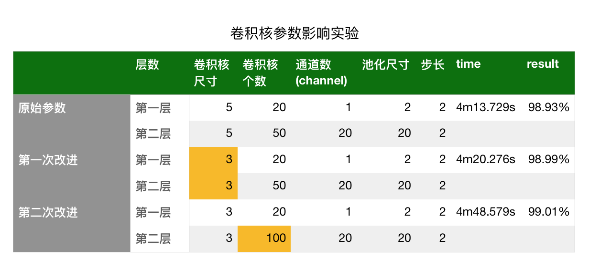

import torch
import torch.nn as nn
import torchvision
import torchvision.transforms as transforms
#2. 超参数设定（Hyperparameter Tuning）：代码中的超参数包括input_size（输入特征的大小）、num_classes（类别数量）、
#num_epochs（训练轮数）、batch_size（批次大小）和learning_rate（学习率）。
#这些超参数的选择对于模型的性能和训练过程至关重要，可以通过调整它们来优化模型的表现。
# Hyper-parameters
input_size = 28 * 28 # 784
num_classes = 10
num_epochs = 5
batch_size = 100
learning_rate = 0.001
#1. 数据读取（Data Loading）：在这段代码中，使用了torchvision.datasets.MNIST来加载MNIST数据集，
#并通过torch.utils.data.DataLoader创建了训练集和测试集的数据加载器。这样可以方便地对数据进行批处理和随机打乱。
# MNIST dataset (images and labels)
train_dataset = torchvision.datasets.MNIST(root='../../data',
train=True,
transform=transforms.ToTensor(),
download=True)
test_dataset = torchvision.datasets.MNIST(root='../../data',
train=False,
transform=transforms.ToTensor())
# Data loader (input pipeline)
train_loader = torch.utils.data.DataLoader(dataset=train_dataset,
batch_size=batch_size,
shuffle=True)
test_loader = torch.utils.data.DataLoader(dataset=test_dataset,
batch_size=batch_size,
shuffle=False)
#3. 这段代码中使用了nn.Linear定义了一个简单的线性回归模型，
#输入大小为input_size，输出大小为num_classes。这是一个简单的全连接层模型，但在实际应用中，可以根据任务需求设计更加复杂的深度学习模型。
# Logistic regression model
model1 = nn.Linear(input_size, num_classes)
#4. 模型训练（Model Training）：通过迭代训练数据集中的批次，将输入数据传递给模型进行前向传播，计算损失并进行反向传播更新模型参数。
#优化器（torch.optim.SGD）根据计算得到的梯度来更新模型参数，以最小化损失函数（nn.CrossEntropyLoss）。
# Loss and optimizer
# nn.CrossEntropyLoss() computes softmax internally
criterion = nn.CrossEntropyLoss()
optimizer = torch.optim.SGD(model1.parameters(), lr=learning_rate)
# Train the model
total_step = len(train_loader)
for epoch in range(num_epochs):
for i, (images, labels) in enumerate(train_loader):
# Reshape images to (batch_size, input_size)
images = images.reshape(-1, input_size)
# Forward pass
outputs = model1(images)
loss = criterion(outputs, labels)
# Backward and optimize
optimizer.zero_grad()
loss.backward()
optimizer.step()
if (i+1) % 100 == 0:
print ('Epoch [{}/{}], Step [{}/{}], Loss: {:.4f}'
.format(epoch+1, num_epochs, i+1, total_step, loss.item()))
#模型测试（Model Testing）：在测试阶段，模型对测试集中的样本进行预测，并计算准确率来评估模型在测试集上的性能。
#通过torch.no_grad()上下文管理器，可以关闭梯度计算，以节省内存资源。
# Test the model
# In test phase, we don't need to compute gradients (for memory efficiency)
with torch.no_grad():
correct = 0
total = 0
for images, labels in test_loader:
images = images.reshape(-1, input_size)
outputs = model1(images)
_, predicted = torch.max(outputs.data, 1)
total += labels.size(0)
correct += (predicted == labels).sum()
print('Accuracy of the model on the 10000 test images: {} %'.format(100 * correct / total))
# Save the model checkpoint
torch.save(model1.state_dict(), 'model1.ckpt')
D:\ProgramData\Anaconda3\lib\site-packages\pandas\compat\_optional.py:138: UserWarning: Pandas requires version '2.7.0' or newer of 'numexpr' (version '2.6.9' currently installed).
warnings.warn(msg, UserWarning)
---------------------------------------------------------------------------
PermissionError Traceback (most recent call last)
<ipython-input-1-7bd8c2a1c68c> in <module>
23 train=True,
24 transform=transforms.ToTensor(),
---> 25 download=True)
26
27 test_dataset = torchvision.datasets.MNIST(root='../../data',
D:\ProgramData\Anaconda3\lib\site-packages\torchvision\datasets\mnist.py in __init__(self, root, train, transform, target_transform, download)
85
86 if download:
---> 87 self.download()
88
89 if not self._check_exists():
D:\ProgramData\Anaconda3\lib\site-packages\torchvision\datasets\mnist.py in download(self)
166 return
167
--> 168 os.makedirs(self.raw_folder, exist_ok=True)
169
170 # download files
D:\ProgramData\Anaconda3\lib\os.py in makedirs(name, mode, exist_ok)
211 if head and tail and not path.exists(head):
212 try:
--> 213 makedirs(head, exist_ok=exist_ok)
214 except FileExistsError:
215 # Defeats race condition when another thread created the path
D:\ProgramData\Anaconda3\lib\os.py in makedirs(name, mode, exist_ok)
211 if head and tail and not path.exists(head):
212 try:
--> 213 makedirs(head, exist_ok=exist_ok)
214 except FileExistsError:
215 # Defeats race condition when another thread created the path
D:\ProgramData\Anaconda3\lib\os.py in makedirs(name, mode, exist_ok)
221 return
222 try:
--> 223 mkdir(name, mode)
224 except OSError:
225 # Cannot rely on checking for EEXIST, since the operating system
PermissionError: [WinError 5] 拒绝访问。: '../../data'
结合框架上认知代码，可以改进的方面：#

1. 数据读取和预处理：这里我们先看预处理部分
2. 网络改进为多层网络并设置激活函数
3. 从原先MSE 变为torch.nn.functional.nll_loss()【手动softmax】,再改变为nn.CrossEntropyLoss()【自带softmax】
4. 使用Adam优化器
5. 使用GPU加速
6. 改进评价指标 ACU,ROC等
7. 保存模型
1. 数据读取和预处理 定义图像的转换方式 transforms.Normalize(mean, std)#
# 定义图像的转换方式
image_transform = torchvision.transforms.Compose([
torchvision.transforms.ToTensor(), # 将图像转换为张量
torchvision.transforms.Normalize(
(0.1307,), (0.3081,)) # 对图像进行标准化处理
])
# 图像数据集
train_dataset = torchvision.datasets.MNIST('dataset/',
train=True,
download=True,
transform=image_transform) # 使用MNIST数据集进行训练，如果数据集不存在，则自动下载
test_dataset = torchvision.datasets.MNIST('dataset/',
train=False,
download=True,
transform=image_transform) # 使用MNIST数据集进行测试，如果数据集不存在，则自动下载
batch_size_train = 64 # 这里我们使用较小的批处理大小进行训练
batch_size_test = 1024
# 数据加载器
train_loader = torch.utils.data.DataLoader(train_dataset,
batch_size=batch_size_train,
shuffle=True) # 创建训练数据的数据加载器，将数据集划分为批次并打乱顺序
test_loader = torch.utils.data.DataLoader(test_dataset,
batch_size=batch_size_test,
shuffle=True) # 创建测试数据的数据加载器，将数据集划分为批次并打乱顺序
for minibatch, (datas, labels) in enumerate(train_loader):
b_x = datas.shape
b_y = labels.shape
# 'minibatch: ', minibatch, '| train_data的维度(batchsize,channel,height,width)' ,b_x,'| train_target的维度(batchsize)',b_y
print ('minibatch: ', minibatch, '| train_data的维度' ,b_x,'| train_target的维度',b_y)
minibatch: 0 | train_data的维度 torch.Size([64, 1, 28, 28]) | train_target的维度 torch.Size([64])
minibatch: 1 | train_data的维度 torch.Size([64, 1, 28, 28]) | train_target的维度 torch.Size([64])
minibatch: 2 | train_data的维度 torch.Size([64, 1, 28, 28]) | train_target的维度 torch.Size([64])
minibatch: 3 | train_data的维度 torch.Size([64, 1, 28, 28]) | train_target的维度 torch.Size([64])
minibatch: 4 | train_data的维度 torch.Size([64, 1, 28, 28]) | train_target的维度 torch.Size([64])
minibatch: 5 | train_data的维度 torch.Size([64, 1, 28, 28]) | train_target的维度 torch.Size([64])
minibatch: 6 | train_data的维度 torch.Size([64, 1, 28, 28]) | train_target的维度 torch.Size([64])
minibatch: 7 | train_data的维度 torch.Size([64, 1, 28, 28]) | train_target的维度 torch.Size([64])
minibatch: 8 | train_data的维度 torch.Size([64, 1, 28, 28]) | train_target的维度 torch.Size([64])
minibatch: 9 | train_data的维度 torch.Size([64, 1, 28, 28]) | train_target的维度 torch.Size([64])
minibatch: 10 | train_data的维度 torch.Size([64, 1, 28, 28]) | train_target的维度 torch.Size([64])
minibatch: 11 | train_data的维度 torch.Size([64, 1, 28, 28]) | train_target的维度 torch.Size([64])
minibatch: 12 | train_data的维度 torch.Size([64, 1, 28, 28]) | train_target的维度 torch.Size([64])
minibatch: 13 | train_data的维度 torch.Size([64, 1, 28, 28]) | train_target的维度 torch.Size([64])
minibatch: 14 | train_data的维度 torch.Size([64, 1, 28, 28]) | train_target的维度 torch.Size([64])
minibatch: 15 | train_data的维度 torch.Size([64, 1, 28, 28]) | train_target的维度 torch.Size([64])
minibatch: 16 | train_data的维度 torch.Size([64, 1, 28, 28]) | train_target的维度 torch.Size([64])
minibatch: 17 | train_data的维度 torch.Size([64, 1, 28, 28]) | train_target的维度 torch.Size([64])
minibatch: 18 | train_data的维度 torch.Size([64, 1, 28, 28]) | train_target的维度 torch.Size([64])
minibatch: 19 | train_data的维度 torch.Size([64, 1, 28, 28]) | train_target的维度 torch.Size([64])
minibatch: 20 | train_data的维度 torch.Size([64, 1, 28, 28]) | train_target的维度 torch.Size([64])
minibatch: 21 | train_data的维度 torch.Size([64, 1, 28, 28]) | train_target的维度 torch.Size([64])
minibatch: 22 | train_data的维度 torch.Size([64, 1, 28, 28]) | train_target的维度 torch.Size([64])
minibatch: 23 | train_data的维度 torch.Size([64, 1, 28, 28]) | train_target的维度 torch.Size([64])
minibatch: 24 | train_data的维度 torch.Size([64, 1, 28, 28]) | train_target的维度 torch.Size([64])
minibatch: 25 | train_data的维度 torch.Size([64, 1, 28, 28]) | train_target的维度 torch.Size([64])
minibatch: 26 | train_data的维度 torch.Size([64, 1, 28, 28]) | train_target的维度 torch.Size([64])
minibatch: 27 | train_data的维度 torch.Size([64, 1, 28, 28]) | train_target的维度 torch.Size([64])
minibatch: 28 | train_data的维度 torch.Size([64, 1, 28, 28]) | train_target的维度 torch.Size([64])
minibatch: 29 | train_data的维度 torch.Size([64, 1, 28, 28]) | train_target的维度 torch.Size([64])
minibatch: 30 | train_data的维度 torch.Size([64, 1, 28, 28]) | train_target的维度 torch.Size([64])
minibatch: 31 | train_data的维度 torch.Size([64, 1, 28, 28]) | train_target的维度 torch.Size([64])
minibatch: 32 | train_data的维度 torch.Size([64, 1, 28, 28]) | train_target的维度 torch.Size([64])
minibatch: 33 | train_data的维度 torch.Size([64, 1, 28, 28]) | train_target的维度 torch.Size([64])
minibatch: 34 | train_data的维度 torch.Size([64, 1, 28, 28]) | train_target的维度 torch.Size([64])
minibatch: 35 | train_data的维度 torch.Size([64, 1, 28, 28]) | train_target的维度 torch.Size([64])
minibatch: 36 | train_data的维度 torch.Size([64, 1, 28, 28]) | train_target的维度 torch.Size([64])
minibatch: 37 | train_data的维度 torch.Size([64, 1, 28, 28]) | train_target的维度 torch.Size([64])
minibatch: 38 | train_data的维度 torch.Size([64, 1, 28, 28]) | train_target的维度 torch.Size([64])
minibatch: 39 | train_data的维度 torch.Size([64, 1, 28, 28]) | train_target的维度 torch.Size([64])
minibatch: 40 | train_data的维度 torch.Size([64, 1, 28, 28]) | train_target的维度 torch.Size([64])
minibatch: 41 | train_data的维度 torch.Size([64, 1, 28, 28]) | train_target的维度 torch.Size([64])
minibatch: 42 | train_data的维度 torch.Size([64, 1, 28, 28]) | train_target的维度 torch.Size([64])
minibatch: 43 | train_data的维度 torch.Size([64, 1, 28, 28]) | train_target的维度 torch.Size([64])
minibatch: 44 | train_data的维度 torch.Size([64, 1, 28, 28]) | train_target的维度 torch.Size([64])
minibatch: 45 | train_data的维度 torch.Size([64, 1, 28, 28]) | train_target的维度 torch.Size([64])
minibatch: 46 | train_data的维度 torch.Size([64, 1, 28, 28]) | train_target的维度 torch.Size([64])
minibatch: 47 | train_data的维度 torch.Size([64, 1, 28, 28]) | train_target的维度 torch.Size([64])
minibatch: 48 | train_data的维度 torch.Size([64, 1, 28, 28]) | train_target的维度 torch.Size([64])
minibatch: 49 | train_data的维度 torch.Size([64, 1, 28, 28]) | train_target的维度 torch.Size([64])
minibatch: 50 | train_data的维度 torch.Size([64, 1, 28, 28]) | train_target的维度 torch.Size([64])
minibatch: 51 | train_data的维度 torch.Size([64, 1, 28, 28]) | train_target的维度 torch.Size([64])
minibatch: 52 | train_data的维度 torch.Size([64, 1, 28, 28]) | train_target的维度 torch.Size([64])
minibatch: 53 | train_data的维度 torch.Size([64, 1, 28, 28]) | train_target的维度 torch.Size([64])
minibatch: 54 | train_data的维度 torch.Size([64, 1, 28, 28]) | train_target的维度 torch.Size([64])
minibatch: 55 | train_data的维度 torch.Size([64, 1, 28, 28]) | train_target的维度 torch.Size([64])
minibatch: 56 | train_data的维度 torch.Size([64, 1, 28, 28]) | train_target的维度 torch.Size([64])
minibatch: 57 | train_data的维度 torch.Size([64, 1, 28, 28]) | train_target的维度 torch.Size([64])
minibatch: 58 | train_data的维度 torch.Size([64, 1, 28, 28]) | train_target的维度 torch.Size([64])
minibatch: 59 | train_data的维度 torch.Size([64, 1, 28, 28]) | train_target的维度 torch.Size([64])
minibatch: 60 | train_data的维度 torch.Size([64, 1, 28, 28]) | train_target的维度 torch.Size([64])
minibatch: 61 | train_data的维度 torch.Size([64, 1, 28, 28]) | train_target的维度 torch.Size([64])
minibatch: 62 | train_data的维度 torch.Size([64, 1, 28, 28]) | train_target的维度 torch.Size([64])
minibatch: 63 | train_data的维度 torch.Size([64, 1, 28, 28]) | train_target的维度 torch.Size([64])
minibatch: 64 | train_data的维度 torch.Size([64, 1, 28, 28]) | train_target的维度 torch.Size([64])
minibatch: 65 | train_data的维度 torch.Size([64, 1, 28, 28]) | train_target的维度 torch.Size([64])
minibatch: 66 | train_data的维度 torch.Size([64, 1, 28, 28]) | train_target的维度 torch.Size([64])
minibatch: 67 | train_data的维度 torch.Size([64, 1, 28, 28]) | train_target的维度 torch.Size([64])
minibatch: 68 | train_data的维度 torch.Size([64, 1, 28, 28]) | train_target的维度 torch.Size([64])
minibatch: 69 | train_data的维度 torch.Size([64, 1, 28, 28]) | train_target的维度 torch.Size([64])
minibatch: 70 | train_data的维度 torch.Size([64, 1, 28, 28]) | train_target的维度 torch.Size([64])
minibatch: 71 | train_data的维度 torch.Size([64, 1, 28, 28]) | train_target的维度 torch.Size([64])
minibatch: 72 | train_data的维度 torch.Size([64, 1, 28, 28]) | train_target的维度 torch.Size([64])
minibatch: 73 | train_data的维度 torch.Size([64, 1, 28, 28]) | train_target的维度 torch.Size([64])
minibatch: 74 | train_data的维度 torch.Size([64, 1, 28, 28]) | train_target的维度 torch.Size([64])
minibatch: 75 | train_data的维度 torch.Size([64, 1, 28, 28]) | train_target的维度 torch.Size([64])
minibatch: 76 | train_data的维度 torch.Size([64, 1, 28, 28]) | train_target的维度 torch.Size([64])
minibatch: 77 | train_data的维度 torch.Size([64, 1, 28, 28]) | train_target的维度 torch.Size([64])
minibatch: 78 | train_data的维度 torch.Size([64, 1, 28, 28]) | train_target的维度 torch.Size([64])
minibatch: 79 | train_data的维度 torch.Size([64, 1, 28, 28]) | train_target的维度 torch.Size([64])
minibatch: 80 | train_data的维度 torch.Size([64, 1, 28, 28]) | train_target的维度 torch.Size([64])
minibatch: 81 | train_data的维度 torch.Size([64, 1, 28, 28]) | train_target的维度 torch.Size([64])
minibatch: 82 | train_data的维度 torch.Size([64, 1, 28, 28]) | train_target的维度 torch.Size([64])
minibatch: 83 | train_data的维度 torch.Size([64, 1, 28, 28]) | train_target的维度 torch.Size([64])
minibatch: 84 | train_data的维度 torch.Size([64, 1, 28, 28]) | train_target的维度 torch.Size([64])
minibatch: 85 | train_data的维度 torch.Size([64, 1, 28, 28]) | train_target的维度 torch.Size([64])
minibatch: 86 | train_data的维度 torch.Size([64, 1, 28, 28]) | train_target的维度 torch.Size([64])
minibatch: 87 | train_data的维度 torch.Size([64, 1, 28, 28]) | train_target的维度 torch.Size([64])
minibatch: 88 | train_data的维度 torch.Size([64, 1, 28, 28]) | train_target的维度 torch.Size([64])
minibatch: 89 | train_data的维度 torch.Size([64, 1, 28, 28]) | train_target的维度 torch.Size([64])
minibatch: 90 | train_data的维度 torch.Size([64, 1, 28, 28]) | train_target的维度 torch.Size([64])
minibatch: 91 | train_data的维度 torch.Size([64, 1, 28, 28]) | train_target的维度 torch.Size([64])
minibatch: 92 | train_data的维度 torch.Size([64, 1, 28, 28]) | train_target的维度 torch.Size([64])
minibatch: 93 | train_data的维度 torch.Size([64, 1, 28, 28]) | train_target的维度 torch.Size([64])
minibatch: 94 | train_data的维度 torch.Size([64, 1, 28, 28]) | train_target的维度 torch.Size([64])
minibatch: 95 | train_data的维度 torch.Size([64, 1, 28, 28]) | train_target的维度 torch.Size([64])
minibatch: 96 | train_data的维度 torch.Size([64, 1, 28, 28]) | train_target的维度 torch.Size([64])
minibatch: 97 | train_data的维度 torch.Size([64, 1, 28, 28]) | train_target的维度 torch.Size([64])
minibatch: 98 | train_data的维度 torch.Size([64, 1, 28, 28]) | train_target的维度 torch.Size([64])
minibatch: 99 | train_data的维度 torch.Size([64, 1, 28, 28]) | train_target的维度 torch.Size([64])
minibatch: 100 | train_data的维度 torch.Size([64, 1, 28, 28]) | train_target的维度 torch.Size([64])
minibatch: 101 | train_data的维度 torch.Size([64, 1, 28, 28]) | train_target的维度 torch.Size([64])
minibatch: 102 | train_data的维度 torch.Size([64, 1, 28, 28]) | train_target的维度 torch.Size([64])
minibatch: 103 | train_data的维度 torch.Size([64, 1, 28, 28]) | train_target的维度 torch.Size([64])
minibatch: 104 | train_data的维度 torch.Size([64, 1, 28, 28]) | train_target的维度 torch.Size([64])
minibatch: 105 | train_data的维度 torch.Size([64, 1, 28, 28]) | train_target的维度 torch.Size([64])
minibatch: 106 | train_data的维度 torch.Size([64, 1, 28, 28]) | train_target的维度 torch.Size([64])
minibatch: 107 | train_data的维度 torch.Size([64, 1, 28, 28]) | train_target的维度 torch.Size([64])
minibatch: 108 | train_data的维度 torch.Size([64, 1, 28, 28]) | train_target的维度 torch.Size([64])
minibatch: 109 | train_data的维度 torch.Size([64, 1, 28, 28]) | train_target的维度 torch.Size([64])
minibatch: 110 | train_data的维度 torch.Size([64, 1, 28, 28]) | train_target的维度 torch.Size([64])
minibatch: 111 | train_data的维度 torch.Size([64, 1, 28, 28]) | train_target的维度 torch.Size([64])
minibatch: 112 | train_data的维度 torch.Size([64, 1, 28, 28]) | train_target的维度 torch.Size([64])
minibatch: 113 | train_data的维度 torch.Size([64, 1, 28, 28]) | train_target的维度 torch.Size([64])
minibatch: 114 | train_data的维度 torch.Size([64, 1, 28, 28]) | train_target的维度 torch.Size([64])
minibatch: 115 | train_data的维度 torch.Size([64, 1, 28, 28]) | train_target的维度 torch.Size([64])
minibatch: 116 | train_data的维度 torch.Size([64, 1, 28, 28]) | train_target的维度 torch.Size([64])
minibatch: 117 | train_data的维度 torch.Size([64, 1, 28, 28]) | train_target的维度 torch.Size([64])
minibatch: 118 | train_data的维度 torch.Size([64, 1, 28, 28]) | train_target的维度 torch.Size([64])
minibatch: 119 | train_data的维度 torch.Size([64, 1, 28, 28]) | train_target的维度 torch.Size([64])
minibatch: 120 | train_data的维度 torch.Size([64, 1, 28, 28]) | train_target的维度 torch.Size([64])
minibatch: 121 | train_data的维度 torch.Size([64, 1, 28, 28]) | train_target的维度 torch.Size([64])
minibatch: 122 | train_data的维度 torch.Size([64, 1, 28, 28]) | train_target的维度 torch.Size([64])
minibatch: 123 | train_data的维度 torch.Size([64, 1, 28, 28]) | train_target的维度 torch.Size([64])
minibatch: 124 | train_data的维度 torch.Size([64, 1, 28, 28]) | train_target的维度 torch.Size([64])
minibatch: 125 | train_data的维度 torch.Size([64, 1, 28, 28]) | train_target的维度 torch.Size([64])
minibatch: 126 | train_data的维度 torch.Size([64, 1, 28, 28]) | train_target的维度 torch.Size([64])
minibatch: 127 | train_data的维度 torch.Size([64, 1, 28, 28]) | train_target的维度 torch.Size([64])
minibatch: 128 | train_data的维度 torch.Size([64, 1, 28, 28]) | train_target的维度 torch.Size([64])
minibatch: 129 | train_data的维度 torch.Size([64, 1, 28, 28]) | train_target的维度 torch.Size([64])
minibatch: 130 | train_data的维度 torch.Size([64, 1, 28, 28]) | train_target的维度 torch.Size([64])
minibatch: 131 | train_data的维度 torch.Size([64, 1, 28, 28]) | train_target的维度 torch.Size([64])
minibatch: 132 | train_data的维度 torch.Size([64, 1, 28, 28]) | train_target的维度 torch.Size([64])
minibatch: 133 | train_data的维度 torch.Size([64, 1, 28, 28]) | train_target的维度 torch.Size([64])
minibatch: 134 | train_data的维度 torch.Size([64, 1, 28, 28]) | train_target的维度 torch.Size([64])
minibatch: 135 | train_data的维度 torch.Size([64, 1, 28, 28]) | train_target的维度 torch.Size([64])
minibatch: 136 | train_data的维度 torch.Size([64, 1, 28, 28]) | train_target的维度 torch.Size([64])
minibatch: 137 | train_data的维度 torch.Size([64, 1, 28, 28]) | train_target的维度 torch.Size([64])
minibatch: 138 | train_data的维度 torch.Size([64, 1, 28, 28]) | train_target的维度 torch.Size([64])
minibatch: 139 | train_data的维度 torch.Size([64, 1, 28, 28]) | train_target的维度 torch.Size([64])
minibatch: 140 | train_data的维度 torch.Size([64, 1, 28, 28]) | train_target的维度 torch.Size([64])
minibatch: 141 | train_data的维度 torch.Size([64, 1, 28, 28]) | train_target的维度 torch.Size([64])
minibatch: 142 | train_data的维度 torch.Size([64, 1, 28, 28]) | train_target的维度 torch.Size([64])
minibatch: 143 | train_data的维度 torch.Size([64, 1, 28, 28]) | train_target的维度 torch.Size([64])
minibatch: 144 | train_data的维度 torch.Size([64, 1, 28, 28]) | train_target的维度 torch.Size([64])
minibatch: 145 | train_data的维度 torch.Size([64, 1, 28, 28]) | train_target的维度 torch.Size([64])
minibatch: 146 | train_data的维度 torch.Size([64, 1, 28, 28]) | train_target的维度 torch.Size([64])
minibatch: 147 | train_data的维度 torch.Size([64, 1, 28, 28]) | train_target的维度 torch.Size([64])
minibatch: 148 | train_data的维度 torch.Size([64, 1, 28, 28]) | train_target的维度 torch.Size([64])
minibatch: 149 | train_data的维度 torch.Size([64, 1, 28, 28]) | train_target的维度 torch.Size([64])
minibatch: 150 | train_data的维度 torch.Size([64, 1, 28, 28]) | train_target的维度 torch.Size([64])
minibatch: 151 | train_data的维度 torch.Size([64, 1, 28, 28]) | train_target的维度 torch.Size([64])
minibatch: 152 | train_data的维度 torch.Size([64, 1, 28, 28]) | train_target的维度 torch.Size([64])
minibatch: 153 | train_data的维度 torch.Size([64, 1, 28, 28]) | train_target的维度 torch.Size([64])
minibatch: 154 | train_data的维度 torch.Size([64, 1, 28, 28]) | train_target的维度 torch.Size([64])
minibatch: 155 | train_data的维度 torch.Size([64, 1, 28, 28]) | train_target的维度 torch.Size([64])
minibatch: 156 | train_data的维度 torch.Size([64, 1, 28, 28]) | train_target的维度 torch.Size([64])
minibatch: 157 | train_data的维度 torch.Size([64, 1, 28, 28]) | train_target的维度 torch.Size([64])
minibatch: 158 | train_data的维度 torch.Size([64, 1, 28, 28]) | train_target的维度 torch.Size([64])
minibatch: 159 | train_data的维度 torch.Size([64, 1, 28, 28]) | train_target的维度 torch.Size([64])
minibatch: 160 | train_data的维度 torch.Size([64, 1, 28, 28]) | train_target的维度 torch.Size([64])
minibatch: 161 | train_data的维度 torch.Size([64, 1, 28, 28]) | train_target的维度 torch.Size([64])
minibatch: 162 | train_data的维度 torch.Size([64, 1, 28, 28]) | train_target的维度 torch.Size([64])
minibatch: 163 | train_data的维度 torch.Size([64, 1, 28, 28]) | train_target的维度 torch.Size([64])
minibatch: 164 | train_data的维度 torch.Size([64, 1, 28, 28]) | train_target的维度 torch.Size([64])
minibatch: 165 | train_data的维度 torch.Size([64, 1, 28, 28]) | train_target的维度 torch.Size([64])
minibatch: 166 | train_data的维度 torch.Size([64, 1, 28, 28]) | train_target的维度 torch.Size([64])
minibatch: 167 | train_data的维度 torch.Size([64, 1, 28, 28]) | train_target的维度 torch.Size([64])
minibatch: 168 | train_data的维度 torch.Size([64, 1, 28, 28]) | train_target的维度 torch.Size([64])
minibatch: 169 | train_data的维度 torch.Size([64, 1, 28, 28]) | train_target的维度 torch.Size([64])
minibatch: 170 | train_data的维度 torch.Size([64, 1, 28, 28]) | train_target的维度 torch.Size([64])
minibatch: 171 | train_data的维度 torch.Size([64, 1, 28, 28]) | train_target的维度 torch.Size([64])
minibatch: 172 | train_data的维度 torch.Size([64, 1, 28, 28]) | train_target的维度 torch.Size([64])
minibatch: 173 | train_data的维度 torch.Size([64, 1, 28, 28]) | train_target的维度 torch.Size([64])
minibatch: 174 | train_data的维度 torch.Size([64, 1, 28, 28]) | train_target的维度 torch.Size([64])
minibatch: 175 | train_data的维度 torch.Size([64, 1, 28, 28]) | train_target的维度 torch.Size([64])
minibatch: 176 | train_data的维度 torch.Size([64, 1, 28, 28]) | train_target的维度 torch.Size([64])
minibatch: 177 | train_data的维度 torch.Size([64, 1, 28, 28]) | train_target的维度 torch.Size([64])
minibatch: 178 | train_data的维度 torch.Size([64, 1, 28, 28]) | train_target的维度 torch.Size([64])
minibatch: 179 | train_data的维度 torch.Size([64, 1, 28, 28]) | train_target的维度 torch.Size([64])
minibatch: 180 | train_data的维度 torch.Size([64, 1, 28, 28]) | train_target的维度 torch.Size([64])
minibatch: 181 | train_data的维度 torch.Size([64, 1, 28, 28]) | train_target的维度 torch.Size([64])
minibatch: 182 | train_data的维度 torch.Size([64, 1, 28, 28]) | train_target的维度 torch.Size([64])
minibatch: 183 | train_data的维度 torch.Size([64, 1, 28, 28]) | train_target的维度 torch.Size([64])
minibatch: 184 | train_data的维度 torch.Size([64, 1, 28, 28]) | train_target的维度 torch.Size([64])
minibatch: 185 | train_data的维度 torch.Size([64, 1, 28, 28]) | train_target的维度 torch.Size([64])
minibatch: 186 | train_data的维度 torch.Size([64, 1, 28, 28]) | train_target的维度 torch.Size([64])
minibatch: 187 | train_data的维度 torch.Size([64, 1, 28, 28]) | train_target的维度 torch.Size([64])
minibatch: 188 | train_data的维度 torch.Size([64, 1, 28, 28]) | train_target的维度 torch.Size([64])
minibatch: 189 | train_data的维度 torch.Size([64, 1, 28, 28]) | train_target的维度 torch.Size([64])
minibatch: 190 | train_data的维度 torch.Size([64, 1, 28, 28]) | train_target的维度 torch.Size([64])
minibatch: 191 | train_data的维度 torch.Size([64, 1, 28, 28]) | train_target的维度 torch.Size([64])
minibatch: 192 | train_data的维度 torch.Size([64, 1, 28, 28]) | train_target的维度 torch.Size([64])
minibatch: 193 | train_data的维度 torch.Size([64, 1, 28, 28]) | train_target的维度 torch.Size([64])
minibatch: 194 | train_data的维度 torch.Size([64, 1, 28, 28]) | train_target的维度 torch.Size([64])
minibatch: 195 | train_data的维度 torch.Size([64, 1, 28, 28]) | train_target的维度 torch.Size([64])
minibatch: 196 | train_data的维度 torch.Size([64, 1, 28, 28]) | train_target的维度 torch.Size([64])
minibatch: 197 | train_data的维度 torch.Size([64, 1, 28, 28]) | train_target的维度 torch.Size([64])
minibatch: 198 | train_data的维度 torch.Size([64, 1, 28, 28]) | train_target的维度 torch.Size([64])
minibatch: 199 | train_data的维度 torch.Size([64, 1, 28, 28]) | train_target的维度 torch.Size([64])
minibatch: 200 | train_data的维度 torch.Size([64, 1, 28, 28]) | train_target的维度 torch.Size([64])
minibatch: 201 | train_data的维度 torch.Size([64, 1, 28, 28]) | train_target的维度 torch.Size([64])
minibatch: 202 | train_data的维度 torch.Size([64, 1, 28, 28]) | train_target的维度 torch.Size([64])
minibatch: 203 | train_data的维度 torch.Size([64, 1, 28, 28]) | train_target的维度 torch.Size([64])
minibatch: 204 | train_data的维度 torch.Size([64, 1, 28, 28]) | train_target的维度 torch.Size([64])
minibatch: 205 | train_data的维度 torch.Size([64, 1, 28, 28]) | train_target的维度 torch.Size([64])
minibatch: 206 | train_data的维度 torch.Size([64, 1, 28, 28]) | train_target的维度 torch.Size([64])
minibatch: 207 | train_data的维度 torch.Size([64, 1, 28, 28]) | train_target的维度 torch.Size([64])
minibatch: 208 | train_data的维度 torch.Size([64, 1, 28, 28]) | train_target的维度 torch.Size([64])
minibatch: 209 | train_data的维度 torch.Size([64, 1, 28, 28]) | train_target的维度 torch.Size([64])
minibatch: 210 | train_data的维度 torch.Size([64, 1, 28, 28]) | train_target的维度 torch.Size([64])
minibatch: 211 | train_data的维度 torch.Size([64, 1, 28, 28]) | train_target的维度 torch.Size([64])
minibatch: 212 | train_data的维度 torch.Size([64, 1, 28, 28]) | train_target的维度 torch.Size([64])
minibatch: 213 | train_data的维度 torch.Size([64, 1, 28, 28]) | train_target的维度 torch.Size([64])
minibatch: 214 | train_data的维度 torch.Size([64, 1, 28, 28]) | train_target的维度 torch.Size([64])
minibatch: 215 | train_data的维度 torch.Size([64, 1, 28, 28]) | train_target的维度 torch.Size([64])
minibatch: 216 | train_data的维度 torch.Size([64, 1, 28, 28]) | train_target的维度 torch.Size([64])
minibatch: 217 | train_data的维度 torch.Size([64, 1, 28, 28]) | train_target的维度 torch.Size([64])
minibatch: 218 | train_data的维度 torch.Size([64, 1, 28, 28]) | train_target的维度 torch.Size([64])
minibatch: 219 | train_data的维度 torch.Size([64, 1, 28, 28]) | train_target的维度 torch.Size([64])
minibatch: 220 | train_data的维度 torch.Size([64, 1, 28, 28]) | train_target的维度 torch.Size([64])
minibatch: 221 | train_data的维度 torch.Size([64, 1, 28, 28]) | train_target的维度 torch.Size([64])
minibatch: 222 | train_data的维度 torch.Size([64, 1, 28, 28]) | train_target的维度 torch.Size([64])
minibatch: 223 | train_data的维度 torch.Size([64, 1, 28, 28]) | train_target的维度 torch.Size([64])
minibatch: 224 | train_data的维度 torch.Size([64, 1, 28, 28]) | train_target的维度 torch.Size([64])
minibatch: 225 | train_data的维度 torch.Size([64, 1, 28, 28]) | train_target的维度 torch.Size([64])
minibatch: 226 | train_data的维度 torch.Size([64, 1, 28, 28]) | train_target的维度 torch.Size([64])
minibatch: 227 | train_data的维度 torch.Size([64, 1, 28, 28]) | train_target的维度 torch.Size([64])
minibatch: 228 | train_data的维度 torch.Size([64, 1, 28, 28]) | train_target的维度 torch.Size([64])
minibatch: 229 | train_data的维度 torch.Size([64, 1, 28, 28]) | train_target的维度 torch.Size([64])
minibatch: 230 | train_data的维度 torch.Size([64, 1, 28, 28]) | train_target的维度 torch.Size([64])
minibatch: 231 | train_data的维度 torch.Size([64, 1, 28, 28]) | train_target的维度 torch.Size([64])
minibatch: 232 | train_data的维度 torch.Size([64, 1, 28, 28]) | train_target的维度 torch.Size([64])
minibatch: 233 | train_data的维度 torch.Size([64, 1, 28, 28]) | train_target的维度 torch.Size([64])
minibatch: 234 | train_data的维度 torch.Size([64, 1, 28, 28]) | train_target的维度 torch.Size([64])
minibatch: 235 | train_data的维度 torch.Size([64, 1, 28, 28]) | train_target的维度 torch.Size([64])
minibatch: 236 | train_data的维度 torch.Size([64, 1, 28, 28]) | train_target的维度 torch.Size([64])
minibatch: 237 | train_data的维度 torch.Size([64, 1, 28, 28]) | train_target的维度 torch.Size([64])
minibatch: 238 | train_data的维度 torch.Size([64, 1, 28, 28]) | train_target的维度 torch.Size([64])
minibatch: 239 | train_data的维度 torch.Size([64, 1, 28, 28]) | train_target的维度 torch.Size([64])
minibatch: 240 | train_data的维度 torch.Size([64, 1, 28, 28]) | train_target的维度 torch.Size([64])
minibatch: 241 | train_data的维度 torch.Size([64, 1, 28, 28]) | train_target的维度 torch.Size([64])
minibatch: 242 | train_data的维度 torch.Size([64, 1, 28, 28]) | train_target的维度 torch.Size([64])
minibatch: 243 | train_data的维度 torch.Size([64, 1, 28, 28]) | train_target的维度 torch.Size([64])
minibatch: 244 | train_data的维度 torch.Size([64, 1, 28, 28]) | train_target的维度 torch.Size([64])
minibatch: 245 | train_data的维度 torch.Size([64, 1, 28, 28]) | train_target的维度 torch.Size([64])
minibatch: 246 | train_data的维度 torch.Size([64, 1, 28, 28]) | train_target的维度 torch.Size([64])
minibatch: 247 | train_data的维度 torch.Size([64, 1, 28, 28]) | train_target的维度 torch.Size([64])
minibatch: 248 | train_data的维度 torch.Size([64, 1, 28, 28]) | train_target的维度 torch.Size([64])
minibatch: 249 | train_data的维度 torch.Size([64, 1, 28, 28]) | train_target的维度 torch.Size([64])
minibatch: 250 | train_data的维度 torch.Size([64, 1, 28, 28]) | train_target的维度 torch.Size([64])
minibatch: 251 | train_data的维度 torch.Size([64, 1, 28, 28]) | train_target的维度 torch.Size([64])
minibatch: 252 | train_data的维度 torch.Size([64, 1, 28, 28]) | train_target的维度 torch.Size([64])
minibatch: 253 | train_data的维度 torch.Size([64, 1, 28, 28]) | train_target的维度 torch.Size([64])
minibatch: 254 | train_data的维度 torch.Size([64, 1, 28, 28]) | train_target的维度 torch.Size([64])
minibatch: 255 | train_data的维度 torch.Size([64, 1, 28, 28]) | train_target的维度 torch.Size([64])
minibatch: 256 | train_data的维度 torch.Size([64, 1, 28, 28]) | train_target的维度 torch.Size([64])
minibatch: 257 | train_data的维度 torch.Size([64, 1, 28, 28]) | train_target的维度 torch.Size([64])
minibatch: 258 | train_data的维度 torch.Size([64, 1, 28, 28]) | train_target的维度 torch.Size([64])
minibatch: 259 | train_data的维度 torch.Size([64, 1, 28, 28]) | train_target的维度 torch.Size([64])
minibatch: 260 | train_data的维度 torch.Size([64, 1, 28, 28]) | train_target的维度 torch.Size([64])
minibatch: 261 | train_data的维度 torch.Size([64, 1, 28, 28]) | train_target的维度 torch.Size([64])
minibatch: 262 | train_data的维度 torch.Size([64, 1, 28, 28]) | train_target的维度 torch.Size([64])
minibatch: 263 | train_data的维度 torch.Size([64, 1, 28, 28]) | train_target的维度 torch.Size([64])
minibatch: 264 | train_data的维度 torch.Size([64, 1, 28, 28]) | train_target的维度 torch.Size([64])
minibatch: 265 | train_data的维度 torch.Size([64, 1, 28, 28]) | train_target的维度 torch.Size([64])
minibatch: 266 | train_data的维度 torch.Size([64, 1, 28, 28]) | train_target的维度 torch.Size([64])
minibatch: 267 | train_data的维度 torch.Size([64, 1, 28, 28]) | train_target的维度 torch.Size([64])
minibatch: 268 | train_data的维度 torch.Size([64, 1, 28, 28]) | train_target的维度 torch.Size([64])
minibatch: 269 | train_data的维度 torch.Size([64, 1, 28, 28]) | train_target的维度 torch.Size([64])
minibatch: 270 | train_data的维度 torch.Size([64, 1, 28, 28]) | train_target的维度 torch.Size([64])
minibatch: 271 | train_data的维度 torch.Size([64, 1, 28, 28]) | train_target的维度 torch.Size([64])
minibatch: 272 | train_data的维度 torch.Size([64, 1, 28, 28]) | train_target的维度 torch.Size([64])
minibatch: 273 | train_data的维度 torch.Size([64, 1, 28, 28]) | train_target的维度 torch.Size([64])
minibatch: 274 | train_data的维度 torch.Size([64, 1, 28, 28]) | train_target的维度 torch.Size([64])
minibatch: 275 | train_data的维度 torch.Size([64, 1, 28, 28]) | train_target的维度 torch.Size([64])
minibatch: 276 | train_data的维度 torch.Size([64, 1, 28, 28]) | train_target的维度 torch.Size([64])
minibatch: 277 | train_data的维度 torch.Size([64, 1, 28, 28]) | train_target的维度 torch.Size([64])
minibatch: 278 | train_data的维度 torch.Size([64, 1, 28, 28]) | train_target的维度 torch.Size([64])
minibatch: 279 | train_data的维度 torch.Size([64, 1, 28, 28]) | train_target的维度 torch.Size([64])
minibatch: 280 | train_data的维度 torch.Size([64, 1, 28, 28]) | train_target的维度 torch.Size([64])
minibatch: 281 | train_data的维度 torch.Size([64, 1, 28, 28]) | train_target的维度 torch.Size([64])
minibatch: 282 | train_data的维度 torch.Size([64, 1, 28, 28]) | train_target的维度 torch.Size([64])
minibatch: 283 | train_data的维度 torch.Size([64, 1, 28, 28]) | train_target的维度 torch.Size([64])
minibatch: 284 | train_data的维度 torch.Size([64, 1, 28, 28]) | train_target的维度 torch.Size([64])
minibatch: 285 | train_data的维度 torch.Size([64, 1, 28, 28]) | train_target的维度 torch.Size([64])
minibatch: 286 | train_data的维度 torch.Size([64, 1, 28, 28]) | train_target的维度 torch.Size([64])
minibatch: 287 | train_data的维度 torch.Size([64, 1, 28, 28]) | train_target的维度 torch.Size([64])
minibatch: 288 | train_data的维度 torch.Size([64, 1, 28, 28]) | train_target的维度 torch.Size([64])
minibatch: 289 | train_data的维度 torch.Size([64, 1, 28, 28]) | train_target的维度 torch.Size([64])
minibatch: 290 | train_data的维度 torch.Size([64, 1, 28, 28]) | train_target的维度 torch.Size([64])
minibatch: 291 | train_data的维度 torch.Size([64, 1, 28, 28]) | train_target的维度 torch.Size([64])
minibatch: 292 | train_data的维度 torch.Size([64, 1, 28, 28]) | train_target的维度 torch.Size([64])
minibatch: 293 | train_data的维度 torch.Size([64, 1, 28, 28]) | train_target的维度 torch.Size([64])
minibatch: 294 | train_data的维度 torch.Size([64, 1, 28, 28]) | train_target的维度 torch.Size([64])
minibatch: 295 | train_data的维度 torch.Size([64, 1, 28, 28]) | train_target的维度 torch.Size([64])
minibatch: 296 | train_data的维度 torch.Size([64, 1, 28, 28]) | train_target的维度 torch.Size([64])
minibatch: 297 | train_data的维度 torch.Size([64, 1, 28, 28]) | train_target的维度 torch.Size([64])
minibatch: 298 | train_data的维度 torch.Size([64, 1, 28, 28]) | train_target的维度 torch.Size([64])
minibatch: 299 | train_data的维度 torch.Size([64, 1, 28, 28]) | train_target的维度 torch.Size([64])
minibatch: 300 | train_data的维度 torch.Size([64, 1, 28, 28]) | train_target的维度 torch.Size([64])
minibatch: 301 | train_data的维度 torch.Size([64, 1, 28, 28]) | train_target的维度 torch.Size([64])
minibatch: 302 | train_data的维度 torch.Size([64, 1, 28, 28]) | train_target的维度 torch.Size([64])
minibatch: 303 | train_data的维度 torch.Size([64, 1, 28, 28]) | train_target的维度 torch.Size([64])
minibatch: 304 | train_data的维度 torch.Size([64, 1, 28, 28]) | train_target的维度 torch.Size([64])
minibatch: 305 | train_data的维度 torch.Size([64, 1, 28, 28]) | train_target的维度 torch.Size([64])
minibatch: 306 | train_data的维度 torch.Size([64, 1, 28, 28]) | train_target的维度 torch.Size([64])
minibatch: 307 | train_data的维度 torch.Size([64, 1, 28, 28]) | train_target的维度 torch.Size([64])
minibatch: 308 | train_data的维度 torch.Size([64, 1, 28, 28]) | train_target的维度 torch.Size([64])
minibatch: 309 | train_data的维度 torch.Size([64, 1, 28, 28]) | train_target的维度 torch.Size([64])
minibatch: 310 | train_data的维度 torch.Size([64, 1, 28, 28]) | train_target的维度 torch.Size([64])
minibatch: 311 | train_data的维度 torch.Size([64, 1, 28, 28]) | train_target的维度 torch.Size([64])
minibatch: 312 | train_data的维度 torch.Size([64, 1, 28, 28]) | train_target的维度 torch.Size([64])
minibatch: 313 | train_data的维度 torch.Size([64, 1, 28, 28]) | train_target的维度 torch.Size([64])
minibatch: 314 | train_data的维度 torch.Size([64, 1, 28, 28]) | train_target的维度 torch.Size([64])
minibatch: 315 | train_data的维度 torch.Size([64, 1, 28, 28]) | train_target的维度 torch.Size([64])
minibatch: 316 | train_data的维度 torch.Size([64, 1, 28, 28]) | train_target的维度 torch.Size([64])
minibatch: 317 | train_data的维度 torch.Size([64, 1, 28, 28]) | train_target的维度 torch.Size([64])
minibatch: 318 | train_data的维度 torch.Size([64, 1, 28, 28]) | train_target的维度 torch.Size([64])
minibatch: 319 | train_data的维度 torch.Size([64, 1, 28, 28]) | train_target的维度 torch.Size([64])
minibatch: 320 | train_data的维度 torch.Size([64, 1, 28, 28]) | train_target的维度 torch.Size([64])
minibatch: 321 | train_data的维度 torch.Size([64, 1, 28, 28]) | train_target的维度 torch.Size([64])
minibatch: 322 | train_data的维度 torch.Size([64, 1, 28, 28]) | train_target的维度 torch.Size([64])
minibatch: 323 | train_data的维度 torch.Size([64, 1, 28, 28]) | train_target的维度 torch.Size([64])
minibatch: 324 | train_data的维度 torch.Size([64, 1, 28, 28]) | train_target的维度 torch.Size([64])
minibatch: 325 | train_data的维度 torch.Size([64, 1, 28, 28]) | train_target的维度 torch.Size([64])
minibatch: 326 | train_data的维度 torch.Size([64, 1, 28, 28]) | train_target的维度 torch.Size([64])
minibatch: 327 | train_data的维度 torch.Size([64, 1, 28, 28]) | train_target的维度 torch.Size([64])
minibatch: 328 | train_data的维度 torch.Size([64, 1, 28, 28]) | train_target的维度 torch.Size([64])
minibatch: 329 | train_data的维度 torch.Size([64, 1, 28, 28]) | train_target的维度 torch.Size([64])
minibatch: 330 | train_data的维度 torch.Size([64, 1, 28, 28]) | train_target的维度 torch.Size([64])
minibatch: 331 | train_data的维度 torch.Size([64, 1, 28, 28]) | train_target的维度 torch.Size([64])
minibatch: 332 | train_data的维度 torch.Size([64, 1, 28, 28]) | train_target的维度 torch.Size([64])
minibatch: 333 | train_data的维度 torch.Size([64, 1, 28, 28]) | train_target的维度 torch.Size([64])
minibatch: 334 | train_data的维度 torch.Size([64, 1, 28, 28]) | train_target的维度 torch.Size([64])
minibatch: 335 | train_data的维度 torch.Size([64, 1, 28, 28]) | train_target的维度 torch.Size([64])
minibatch: 336 | train_data的维度 torch.Size([64, 1, 28, 28]) | train_target的维度 torch.Size([64])
minibatch: 337 | train_data的维度 torch.Size([64, 1, 28, 28]) | train_target的维度 torch.Size([64])
minibatch: 338 | train_data的维度 torch.Size([64, 1, 28, 28]) | train_target的维度 torch.Size([64])
minibatch: 339 | train_data的维度 torch.Size([64, 1, 28, 28]) | train_target的维度 torch.Size([64])
minibatch: 340 | train_data的维度 torch.Size([64, 1, 28, 28]) | train_target的维度 torch.Size([64])
minibatch: 341 | train_data的维度 torch.Size([64, 1, 28, 28]) | train_target的维度 torch.Size([64])
minibatch: 342 | train_data的维度 torch.Size([64, 1, 28, 28]) | train_target的维度 torch.Size([64])
minibatch: 343 | train_data的维度 torch.Size([64, 1, 28, 28]) | train_target的维度 torch.Size([64])
minibatch: 344 | train_data的维度 torch.Size([64, 1, 28, 28]) | train_target的维度 torch.Size([64])
minibatch: 345 | train_data的维度 torch.Size([64, 1, 28, 28]) | train_target的维度 torch.Size([64])
minibatch: 346 | train_data的维度 torch.Size([64, 1, 28, 28]) | train_target的维度 torch.Size([64])
minibatch: 347 | train_data的维度 torch.Size([64, 1, 28, 28]) | train_target的维度 torch.Size([64])
minibatch: 348 | train_data的维度 torch.Size([64, 1, 28, 28]) | train_target的维度 torch.Size([64])
minibatch: 349 | train_data的维度 torch.Size([64, 1, 28, 28]) | train_target的维度 torch.Size([64])
minibatch: 350 | train_data的维度 torch.Size([64, 1, 28, 28]) | train_target的维度 torch.Size([64])
minibatch: 351 | train_data的维度 torch.Size([64, 1, 28, 28]) | train_target的维度 torch.Size([64])
minibatch: 352 | train_data的维度 torch.Size([64, 1, 28, 28]) | train_target的维度 torch.Size([64])
minibatch: 353 | train_data的维度 torch.Size([64, 1, 28, 28]) | train_target的维度 torch.Size([64])
minibatch: 354 | train_data的维度 torch.Size([64, 1, 28, 28]) | train_target的维度 torch.Size([64])
minibatch: 355 | train_data的维度 torch.Size([64, 1, 28, 28]) | train_target的维度 torch.Size([64])
minibatch: 356 | train_data的维度 torch.Size([64, 1, 28, 28]) | train_target的维度 torch.Size([64])
minibatch: 357 | train_data的维度 torch.Size([64, 1, 28, 28]) | train_target的维度 torch.Size([64])
minibatch: 358 | train_data的维度 torch.Size([64, 1, 28, 28]) | train_target的维度 torch.Size([64])
minibatch: 359 | train_data的维度 torch.Size([64, 1, 28, 28]) | train_target的维度 torch.Size([64])
minibatch: 360 | train_data的维度 torch.Size([64, 1, 28, 28]) | train_target的维度 torch.Size([64])
minibatch: 361 | train_data的维度 torch.Size([64, 1, 28, 28]) | train_target的维度 torch.Size([64])
minibatch: 362 | train_data的维度 torch.Size([64, 1, 28, 28]) | train_target的维度 torch.Size([64])
minibatch: 363 | train_data的维度 torch.Size([64, 1, 28, 28]) | train_target的维度 torch.Size([64])
minibatch: 364 | train_data的维度 torch.Size([64, 1, 28, 28]) | train_target的维度 torch.Size([64])
minibatch: 365 | train_data的维度 torch.Size([64, 1, 28, 28]) | train_target的维度 torch.Size([64])
minibatch: 366 | train_data的维度 torch.Size([64, 1, 28, 28]) | train_target的维度 torch.Size([64])
minibatch: 367 | train_data的维度 torch.Size([64, 1, 28, 28]) | train_target的维度 torch.Size([64])
minibatch: 368 | train_data的维度 torch.Size([64, 1, 28, 28]) | train_target的维度 torch.Size([64])
minibatch: 369 | train_data的维度 torch.Size([64, 1, 28, 28]) | train_target的维度 torch.Size([64])
minibatch: 370 | train_data的维度 torch.Size([64, 1, 28, 28]) | train_target的维度 torch.Size([64])
minibatch: 371 | train_data的维度 torch.Size([64, 1, 28, 28]) | train_target的维度 torch.Size([64])
minibatch: 372 | train_data的维度 torch.Size([64, 1, 28, 28]) | train_target的维度 torch.Size([64])
minibatch: 373 | train_data的维度 torch.Size([64, 1, 28, 28]) | train_target的维度 torch.Size([64])
minibatch: 374 | train_data的维度 torch.Size([64, 1, 28, 28]) | train_target的维度 torch.Size([64])
minibatch: 375 | train_data的维度 torch.Size([64, 1, 28, 28]) | train_target的维度 torch.Size([64])
minibatch: 376 | train_data的维度 torch.Size([64, 1, 28, 28]) | train_target的维度 torch.Size([64])
minibatch: 377 | train_data的维度 torch.Size([64, 1, 28, 28]) | train_target的维度 torch.Size([64])
minibatch: 378 | train_data的维度 torch.Size([64, 1, 28, 28]) | train_target的维度 torch.Size([64])
minibatch: 379 | train_data的维度 torch.Size([64, 1, 28, 28]) | train_target的维度 torch.Size([64])
minibatch: 380 | train_data的维度 torch.Size([64, 1, 28, 28]) | train_target的维度 torch.Size([64])
minibatch: 381 | train_data的维度 torch.Size([64, 1, 28, 28]) | train_target的维度 torch.Size([64])
minibatch: 382 | train_data的维度 torch.Size([64, 1, 28, 28]) | train_target的维度 torch.Size([64])
minibatch: 383 | train_data的维度 torch.Size([64, 1, 28, 28]) | train_target的维度 torch.Size([64])
minibatch: 384 | train_data的维度 torch.Size([64, 1, 28, 28]) | train_target的维度 torch.Size([64])
minibatch: 385 | train_data的维度 torch.Size([64, 1, 28, 28]) | train_target的维度 torch.Size([64])
minibatch: 386 | train_data的维度 torch.Size([64, 1, 28, 28]) | train_target的维度 torch.Size([64])
minibatch: 387 | train_data的维度 torch.Size([64, 1, 28, 28]) | train_target的维度 torch.Size([64])
minibatch: 388 | train_data的维度 torch.Size([64, 1, 28, 28]) | train_target的维度 torch.Size([64])
minibatch: 389 | train_data的维度 torch.Size([64, 1, 28, 28]) | train_target的维度 torch.Size([64])
minibatch: 390 | train_data的维度 torch.Size([64, 1, 28, 28]) | train_target的维度 torch.Size([64])
minibatch: 391 | train_data的维度 torch.Size([64, 1, 28, 28]) | train_target的维度 torch.Size([64])
minibatch: 392 | train_data的维度 torch.Size([64, 1, 28, 28]) | train_target的维度 torch.Size([64])
minibatch: 393 | train_data的维度 torch.Size([64, 1, 28, 28]) | train_target的维度 torch.Size([64])
minibatch: 394 | train_data的维度 torch.Size([64, 1, 28, 28]) | train_target的维度 torch.Size([64])
minibatch: 395 | train_data的维度 torch.Size([64, 1, 28, 28]) | train_target的维度 torch.Size([64])
minibatch: 396 | train_data的维度 torch.Size([64, 1, 28, 28]) | train_target的维度 torch.Size([64])
minibatch: 397 | train_data的维度 torch.Size([64, 1, 28, 28]) | train_target的维度 torch.Size([64])
minibatch: 398 | train_data的维度 torch.Size([64, 1, 28, 28]) | train_target的维度 torch.Size([64])
minibatch: 399 | train_data的维度 torch.Size([64, 1, 28, 28]) | train_target的维度 torch.Size([64])
minibatch: 400 | train_data的维度 torch.Size([64, 1, 28, 28]) | train_target的维度 torch.Size([64])
minibatch: 401 | train_data的维度 torch.Size([64, 1, 28, 28]) | train_target的维度 torch.Size([64])
minibatch: 402 | train_data的维度 torch.Size([64, 1, 28, 28]) | train_target的维度 torch.Size([64])
minibatch: 403 | train_data的维度 torch.Size([64, 1, 28, 28]) | train_target的维度 torch.Size([64])
minibatch: 404 | train_data的维度 torch.Size([64, 1, 28, 28]) | train_target的维度 torch.Size([64])
minibatch: 405 | train_data的维度 torch.Size([64, 1, 28, 28]) | train_target的维度 torch.Size([64])
minibatch: 406 | train_data的维度 torch.Size([64, 1, 28, 28]) | train_target的维度 torch.Size([64])
minibatch: 407 | train_data的维度 torch.Size([64, 1, 28, 28]) | train_target的维度 torch.Size([64])
minibatch: 408 | train_data的维度 torch.Size([64, 1, 28, 28]) | train_target的维度 torch.Size([64])
minibatch: 409 | train_data的维度 torch.Size([64, 1, 28, 28]) | train_target的维度 torch.Size([64])
minibatch: 410 | train_data的维度 torch.Size([64, 1, 28, 28]) | train_target的维度 torch.Size([64])
minibatch: 411 | train_data的维度 torch.Size([64, 1, 28, 28]) | train_target的维度 torch.Size([64])
minibatch: 412 | train_data的维度 torch.Size([64, 1, 28, 28]) | train_target的维度 torch.Size([64])
minibatch: 413 | train_data的维度 torch.Size([64, 1, 28, 28]) | train_target的维度 torch.Size([64])
minibatch: 414 | train_data的维度 torch.Size([64, 1, 28, 28]) | train_target的维度 torch.Size([64])
minibatch: 415 | train_data的维度 torch.Size([64, 1, 28, 28]) | train_target的维度 torch.Size([64])
minibatch: 416 | train_data的维度 torch.Size([64, 1, 28, 28]) | train_target的维度 torch.Size([64])
minibatch: 417 | train_data的维度 torch.Size([64, 1, 28, 28]) | train_target的维度 torch.Size([64])
minibatch: 418 | train_data的维度 torch.Size([64, 1, 28, 28]) | train_target的维度 torch.Size([64])
minibatch: 419 | train_data的维度 torch.Size([64, 1, 28, 28]) | train_target的维度 torch.Size([64])
minibatch: 420 | train_data的维度 torch.Size([64, 1, 28, 28]) | train_target的维度 torch.Size([64])
minibatch: 421 | train_data的维度 torch.Size([64, 1, 28, 28]) | train_target的维度 torch.Size([64])
minibatch: 422 | train_data的维度 torch.Size([64, 1, 28, 28]) | train_target的维度 torch.Size([64])
minibatch: 423 | train_data的维度 torch.Size([64, 1, 28, 28]) | train_target的维度 torch.Size([64])
minibatch: 424 | train_data的维度 torch.Size([64, 1, 28, 28]) | train_target的维度 torch.Size([64])
minibatch: 425 | train_data的维度 torch.Size([64, 1, 28, 28]) | train_target的维度 torch.Size([64])
minibatch: 426 | train_data的维度 torch.Size([64, 1, 28, 28]) | train_target的维度 torch.Size([64])
minibatch: 427 | train_data的维度 torch.Size([64, 1, 28, 28]) | train_target的维度 torch.Size([64])
minibatch: 428 | train_data的维度 torch.Size([64, 1, 28, 28]) | train_target的维度 torch.Size([64])
minibatch: 429 | train_data的维度 torch.Size([64, 1, 28, 28]) | train_target的维度 torch.Size([64])
minibatch: 430 | train_data的维度 torch.Size([64, 1, 28, 28]) | train_target的维度 torch.Size([64])
minibatch: 431 | train_data的维度 torch.Size([64, 1, 28, 28]) | train_target的维度 torch.Size([64])
minibatch: 432 | train_data的维度 torch.Size([64, 1, 28, 28]) | train_target的维度 torch.Size([64])
minibatch: 433 | train_data的维度 torch.Size([64, 1, 28, 28]) | train_target的维度 torch.Size([64])
minibatch: 434 | train_data的维度 torch.Size([64, 1, 28, 28]) | train_target的维度 torch.Size([64])
minibatch: 435 | train_data的维度 torch.Size([64, 1, 28, 28]) | train_target的维度 torch.Size([64])
minibatch: 436 | train_data的维度 torch.Size([64, 1, 28, 28]) | train_target的维度 torch.Size([64])
minibatch: 437 | train_data的维度 torch.Size([64, 1, 28, 28]) | train_target的维度 torch.Size([64])
minibatch: 438 | train_data的维度 torch.Size([64, 1, 28, 28]) | train_target的维度 torch.Size([64])
minibatch: 439 | train_data的维度 torch.Size([64, 1, 28, 28]) | train_target的维度 torch.Size([64])
minibatch: 440 | train_data的维度 torch.Size([64, 1, 28, 28]) | train_target的维度 torch.Size([64])
minibatch: 441 | train_data的维度 torch.Size([64, 1, 28, 28]) | train_target的维度 torch.Size([64])
minibatch: 442 | train_data的维度 torch.Size([64, 1, 28, 28]) | train_target的维度 torch.Size([64])
minibatch: 443 | train_data的维度 torch.Size([64, 1, 28, 28]) | train_target的维度 torch.Size([64])
minibatch: 444 | train_data的维度 torch.Size([64, 1, 28, 28]) | train_target的维度 torch.Size([64])
minibatch: 445 | train_data的维度 torch.Size([64, 1, 28, 28]) | train_target的维度 torch.Size([64])
minibatch: 446 | train_data的维度 torch.Size([64, 1, 28, 28]) | train_target的维度 torch.Size([64])
minibatch: 447 | train_data的维度 torch.Size([64, 1, 28, 28]) | train_target的维度 torch.Size([64])
minibatch: 448 | train_data的维度 torch.Size([64, 1, 28, 28]) | train_target的维度 torch.Size([64])
minibatch: 449 | train_data的维度 torch.Size([64, 1, 28, 28]) | train_target的维度 torch.Size([64])
minibatch: 450 | train_data的维度 torch.Size([64, 1, 28, 28]) | train_target的维度 torch.Size([64])
minibatch: 451 | train_data的维度 torch.Size([64, 1, 28, 28]) | train_target的维度 torch.Size([64])
minibatch: 452 | train_data的维度 torch.Size([64, 1, 28, 28]) | train_target的维度 torch.Size([64])
minibatch: 453 | train_data的维度 torch.Size([64, 1, 28, 28]) | train_target的维度 torch.Size([64])
minibatch: 454 | train_data的维度 torch.Size([64, 1, 28, 28]) | train_target的维度 torch.Size([64])
minibatch: 455 | train_data的维度 torch.Size([64, 1, 28, 28]) | train_target的维度 torch.Size([64])
minibatch: 456 | train_data的维度 torch.Size([64, 1, 28, 28]) | train_target的维度 torch.Size([64])
minibatch: 457 | train_data的维度 torch.Size([64, 1, 28, 28]) | train_target的维度 torch.Size([64])
minibatch: 458 | train_data的维度 torch.Size([64, 1, 28, 28]) | train_target的维度 torch.Size([64])
minibatch: 459 | train_data的维度 torch.Size([64, 1, 28, 28]) | train_target的维度 torch.Size([64])
minibatch: 460 | train_data的维度 torch.Size([64, 1, 28, 28]) | train_target的维度 torch.Size([64])
minibatch: 461 | train_data的维度 torch.Size([64, 1, 28, 28]) | train_target的维度 torch.Size([64])
minibatch: 462 | train_data的维度 torch.Size([64, 1, 28, 28]) | train_target的维度 torch.Size([64])
minibatch: 463 | train_data的维度 torch.Size([64, 1, 28, 28]) | train_target的维度 torch.Size([64])
minibatch: 464 | train_data的维度 torch.Size([64, 1, 28, 28]) | train_target的维度 torch.Size([64])
minibatch: 465 | train_data的维度 torch.Size([64, 1, 28, 28]) | train_target的维度 torch.Size([64])
minibatch: 466 | train_data的维度 torch.Size([64, 1, 28, 28]) | train_target的维度 torch.Size([64])
minibatch: 467 | train_data的维度 torch.Size([64, 1, 28, 28]) | train_target的维度 torch.Size([64])
minibatch: 468 | train_data的维度 torch.Size([64, 1, 28, 28]) | train_target的维度 torch.Size([64])
minibatch: 469 | train_data的维度 torch.Size([64, 1, 28, 28]) | train_target的维度 torch.Size([64])
minibatch: 470 | train_data的维度 torch.Size([64, 1, 28, 28]) | train_target的维度 torch.Size([64])
minibatch: 471 | train_data的维度 torch.Size([64, 1, 28, 28]) | train_target的维度 torch.Size([64])
minibatch: 472 | train_data的维度 torch.Size([64, 1, 28, 28]) | train_target的维度 torch.Size([64])
minibatch: 473 | train_data的维度 torch.Size([64, 1, 28, 28]) | train_target的维度 torch.Size([64])
minibatch: 474 | train_data的维度 torch.Size([64, 1, 28, 28]) | train_target的维度 torch.Size([64])
minibatch: 475 | train_data的维度 torch.Size([64, 1, 28, 28]) | train_target的维度 torch.Size([64])
minibatch: 476 | train_data的维度 torch.Size([64, 1, 28, 28]) | train_target的维度 torch.Size([64])
minibatch: 477 | train_data的维度 torch.Size([64, 1, 28, 28]) | train_target的维度 torch.Size([64])
minibatch: 478 | train_data的维度 torch.Size([64, 1, 28, 28]) | train_target的维度 torch.Size([64])
minibatch: 479 | train_data的维度 torch.Size([64, 1, 28, 28]) | train_target的维度 torch.Size([64])
minibatch: 480 | train_data的维度 torch.Size([64, 1, 28, 28]) | train_target的维度 torch.Size([64])
minibatch: 481 | train_data的维度 torch.Size([64, 1, 28, 28]) | train_target的维度 torch.Size([64])
minibatch: 482 | train_data的维度 torch.Size([64, 1, 28, 28]) | train_target的维度 torch.Size([64])
minibatch: 483 | train_data的维度 torch.Size([64, 1, 28, 28]) | train_target的维度 torch.Size([64])
minibatch: 484 | train_data的维度 torch.Size([64, 1, 28, 28]) | train_target的维度 torch.Size([64])
minibatch: 485 | train_data的维度 torch.Size([64, 1, 28, 28]) | train_target的维度 torch.Size([64])
minibatch: 486 | train_data的维度 torch.Size([64, 1, 28, 28]) | train_target的维度 torch.Size([64])
minibatch: 487 | train_data的维度 torch.Size([64, 1, 28, 28]) | train_target的维度 torch.Size([64])
minibatch: 488 | train_data的维度 torch.Size([64, 1, 28, 28]) | train_target的维度 torch.Size([64])
minibatch: 489 | train_data的维度 torch.Size([64, 1, 28, 28]) | train_target的维度 torch.Size([64])
minibatch: 490 | train_data的维度 torch.Size([64, 1, 28, 28]) | train_target的维度 torch.Size([64])
minibatch: 491 | train_data的维度 torch.Size([64, 1, 28, 28]) | train_target的维度 torch.Size([64])
minibatch: 492 | train_data的维度 torch.Size([64, 1, 28, 28]) | train_target的维度 torch.Size([64])
minibatch: 493 | train_data的维度 torch.Size([64, 1, 28, 28]) | train_target的维度 torch.Size([64])
minibatch: 494 | train_data的维度 torch.Size([64, 1, 28, 28]) | train_target的维度 torch.Size([64])
minibatch: 495 | train_data的维度 torch.Size([64, 1, 28, 28]) | train_target的维度 torch.Size([64])
minibatch: 496 | train_data的维度 torch.Size([64, 1, 28, 28]) | train_target的维度 torch.Size([64])
minibatch: 497 | train_data的维度 torch.Size([64, 1, 28, 28]) | train_target的维度 torch.Size([64])
minibatch: 498 | train_data的维度 torch.Size([64, 1, 28, 28]) | train_target的维度 torch.Size([64])
minibatch: 499 | train_data的维度 torch.Size([64, 1, 28, 28]) | train_target的维度 torch.Size([64])
minibatch: 500 | train_data的维度 torch.Size([64, 1, 28, 28]) | train_target的维度 torch.Size([64])
minibatch: 501 | train_data的维度 torch.Size([64, 1, 28, 28]) | train_target的维度 torch.Size([64])
minibatch: 502 | train_data的维度 torch.Size([64, 1, 28, 28]) | train_target的维度 torch.Size([64])
minibatch: 503 | train_data的维度 torch.Size([64, 1, 28, 28]) | train_target的维度 torch.Size([64])
minibatch: 504 | train_data的维度 torch.Size([64, 1, 28, 28]) | train_target的维度 torch.Size([64])
minibatch: 505 | train_data的维度 torch.Size([64, 1, 28, 28]) | train_target的维度 torch.Size([64])
minibatch: 506 | train_data的维度 torch.Size([64, 1, 28, 28]) | train_target的维度 torch.Size([64])
minibatch: 507 | train_data的维度 torch.Size([64, 1, 28, 28]) | train_target的维度 torch.Size([64])
minibatch: 508 | train_data的维度 torch.Size([64, 1, 28, 28]) | train_target的维度 torch.Size([64])
minibatch: 509 | train_data的维度 torch.Size([64, 1, 28, 28]) | train_target的维度 torch.Size([64])
minibatch: 510 | train_data的维度 torch.Size([64, 1, 28, 28]) | train_target的维度 torch.Size([64])
minibatch: 511 | train_data的维度 torch.Size([64, 1, 28, 28]) | train_target的维度 torch.Size([64])
minibatch: 512 | train_data的维度 torch.Size([64, 1, 28, 28]) | train_target的维度 torch.Size([64])
minibatch: 513 | train_data的维度 torch.Size([64, 1, 28, 28]) | train_target的维度 torch.Size([64])
minibatch: 514 | train_data的维度 torch.Size([64, 1, 28, 28]) | train_target的维度 torch.Size([64])
minibatch: 515 | train_data的维度 torch.Size([64, 1, 28, 28]) | train_target的维度 torch.Size([64])
minibatch: 516 | train_data的维度 torch.Size([64, 1, 28, 28]) | train_target的维度 torch.Size([64])
minibatch: 517 | train_data的维度 torch.Size([64, 1, 28, 28]) | train_target的维度 torch.Size([64])
minibatch: 518 | train_data的维度 torch.Size([64, 1, 28, 28]) | train_target的维度 torch.Size([64])
minibatch: 519 | train_data的维度 torch.Size([64, 1, 28, 28]) | train_target的维度 torch.Size([64])
minibatch: 520 | train_data的维度 torch.Size([64, 1, 28, 28]) | train_target的维度 torch.Size([64])
minibatch: 521 | train_data的维度 torch.Size([64, 1, 28, 28]) | train_target的维度 torch.Size([64])
minibatch: 522 | train_data的维度 torch.Size([64, 1, 28, 28]) | train_target的维度 torch.Size([64])
minibatch: 523 | train_data的维度 torch.Size([64, 1, 28, 28]) | train_target的维度 torch.Size([64])
minibatch: 524 | train_data的维度 torch.Size([64, 1, 28, 28]) | train_target的维度 torch.Size([64])
minibatch: 525 | train_data的维度 torch.Size([64, 1, 28, 28]) | train_target的维度 torch.Size([64])
minibatch: 526 | train_data的维度 torch.Size([64, 1, 28, 28]) | train_target的维度 torch.Size([64])
minibatch: 527 | train_data的维度 torch.Size([64, 1, 28, 28]) | train_target的维度 torch.Size([64])
minibatch: 528 | train_data的维度 torch.Size([64, 1, 28, 28]) | train_target的维度 torch.Size([64])
minibatch: 529 | train_data的维度 torch.Size([64, 1, 28, 28]) | train_target的维度 torch.Size([64])
minibatch: 530 | train_data的维度 torch.Size([64, 1, 28, 28]) | train_target的维度 torch.Size([64])
minibatch: 531 | train_data的维度 torch.Size([64, 1, 28, 28]) | train_target的维度 torch.Size([64])
minibatch: 532 | train_data的维度 torch.Size([64, 1, 28, 28]) | train_target的维度 torch.Size([64])
minibatch: 533 | train_data的维度 torch.Size([64, 1, 28, 28]) | train_target的维度 torch.Size([64])
minibatch: 534 | train_data的维度 torch.Size([64, 1, 28, 28]) | train_target的维度 torch.Size([64])
minibatch: 535 | train_data的维度 torch.Size([64, 1, 28, 28]) | train_target的维度 torch.Size([64])
minibatch: 536 | train_data的维度 torch.Size([64, 1, 28, 28]) | train_target的维度 torch.Size([64])
minibatch: 537 | train_data的维度 torch.Size([64, 1, 28, 28]) | train_target的维度 torch.Size([64])
minibatch: 538 | train_data的维度 torch.Size([64, 1, 28, 28]) | train_target的维度 torch.Size([64])
minibatch: 539 | train_data的维度 torch.Size([64, 1, 28, 28]) | train_target的维度 torch.Size([64])
minibatch: 540 | train_data的维度 torch.Size([64, 1, 28, 28]) | train_target的维度 torch.Size([64])
minibatch: 541 | train_data的维度 torch.Size([64, 1, 28, 28]) | train_target的维度 torch.Size([64])
minibatch: 542 | train_data的维度 torch.Size([64, 1, 28, 28]) | train_target的维度 torch.Size([64])
minibatch: 543 | train_data的维度 torch.Size([64, 1, 28, 28]) | train_target的维度 torch.Size([64])
minibatch: 544 | train_data的维度 torch.Size([64, 1, 28, 28]) | train_target的维度 torch.Size([64])
minibatch: 545 | train_data的维度 torch.Size([64, 1, 28, 28]) | train_target的维度 torch.Size([64])
minibatch: 546 | train_data的维度 torch.Size([64, 1, 28, 28]) | train_target的维度 torch.Size([64])
minibatch: 547 | train_data的维度 torch.Size([64, 1, 28, 28]) | train_target的维度 torch.Size([64])
minibatch: 548 | train_data的维度 torch.Size([64, 1, 28, 28]) | train_target的维度 torch.Size([64])
minibatch: 549 | train_data的维度 torch.Size([64, 1, 28, 28]) | train_target的维度 torch.Size([64])
minibatch: 550 | train_data的维度 torch.Size([64, 1, 28, 28]) | train_target的维度 torch.Size([64])
minibatch: 551 | train_data的维度 torch.Size([64, 1, 28, 28]) | train_target的维度 torch.Size([64])
minibatch: 552 | train_data的维度 torch.Size([64, 1, 28, 28]) | train_target的维度 torch.Size([64])
minibatch: 553 | train_data的维度 torch.Size([64, 1, 28, 28]) | train_target的维度 torch.Size([64])
minibatch: 554 | train_data的维度 torch.Size([64, 1, 28, 28]) | train_target的维度 torch.Size([64])
minibatch: 555 | train_data的维度 torch.Size([64, 1, 28, 28]) | train_target的维度 torch.Size([64])
minibatch: 556 | train_data的维度 torch.Size([64, 1, 28, 28]) | train_target的维度 torch.Size([64])
minibatch: 557 | train_data的维度 torch.Size([64, 1, 28, 28]) | train_target的维度 torch.Size([64])
minibatch: 558 | train_data的维度 torch.Size([64, 1, 28, 28]) | train_target的维度 torch.Size([64])
minibatch: 559 | train_data的维度 torch.Size([64, 1, 28, 28]) | train_target的维度 torch.Size([64])
minibatch: 560 | train_data的维度 torch.Size([64, 1, 28, 28]) | train_target的维度 torch.Size([64])
minibatch: 561 | train_data的维度 torch.Size([64, 1, 28, 28]) | train_target的维度 torch.Size([64])
minibatch: 562 | train_data的维度 torch.Size([64, 1, 28, 28]) | train_target的维度 torch.Size([64])
minibatch: 563 | train_data的维度 torch.Size([64, 1, 28, 28]) | train_target的维度 torch.Size([64])
minibatch: 564 | train_data的维度 torch.Size([64, 1, 28, 28]) | train_target的维度 torch.Size([64])
minibatch: 565 | train_data的维度 torch.Size([64, 1, 28, 28]) | train_target的维度 torch.Size([64])
minibatch: 566 | train_data的维度 torch.Size([64, 1, 28, 28]) | train_target的维度 torch.Size([64])
minibatch: 567 | train_data的维度 torch.Size([64, 1, 28, 28]) | train_target的维度 torch.Size([64])
minibatch: 568 | train_data的维度 torch.Size([64, 1, 28, 28]) | train_target的维度 torch.Size([64])
minibatch: 569 | train_data的维度 torch.Size([64, 1, 28, 28]) | train_target的维度 torch.Size([64])
minibatch: 570 | train_data的维度 torch.Size([64, 1, 28, 28]) | train_target的维度 torch.Size([64])
minibatch: 571 | train_data的维度 torch.Size([64, 1, 28, 28]) | train_target的维度 torch.Size([64])
minibatch: 572 | train_data的维度 torch.Size([64, 1, 28, 28]) | train_target的维度 torch.Size([64])
minibatch: 573 | train_data的维度 torch.Size([64, 1, 28, 28]) | train_target的维度 torch.Size([64])
minibatch: 574 | train_data的维度 torch.Size([64, 1, 28, 28]) | train_target的维度 torch.Size([64])
minibatch: 575 | train_data的维度 torch.Size([64, 1, 28, 28]) | train_target的维度 torch.Size([64])
minibatch: 576 | train_data的维度 torch.Size([64, 1, 28, 28]) | train_target的维度 torch.Size([64])
minibatch: 577 | train_data的维度 torch.Size([64, 1, 28, 28]) | train_target的维度 torch.Size([64])
minibatch: 578 | train_data的维度 torch.Size([64, 1, 28, 28]) | train_target的维度 torch.Size([64])
minibatch: 579 | train_data的维度 torch.Size([64, 1, 28, 28]) | train_target的维度 torch.Size([64])
minibatch: 580 | train_data的维度 torch.Size([64, 1, 28, 28]) | train_target的维度 torch.Size([64])
minibatch: 581 | train_data的维度 torch.Size([64, 1, 28, 28]) | train_target的维度 torch.Size([64])
minibatch: 582 | train_data的维度 torch.Size([64, 1, 28, 28]) | train_target的维度 torch.Size([64])
minibatch: 583 | train_data的维度 torch.Size([64, 1, 28, 28]) | train_target的维度 torch.Size([64])
minibatch: 584 | train_data的维度 torch.Size([64, 1, 28, 28]) | train_target的维度 torch.Size([64])
minibatch: 585 | train_data的维度 torch.Size([64, 1, 28, 28]) | train_target的维度 torch.Size([64])
minibatch: 586 | train_data的维度 torch.Size([64, 1, 28, 28]) | train_target的维度 torch.Size([64])
minibatch: 587 | train_data的维度 torch.Size([64, 1, 28, 28]) | train_target的维度 torch.Size([64])
minibatch: 588 | train_data的维度 torch.Size([64, 1, 28, 28]) | train_target的维度 torch.Size([64])
minibatch: 589 | train_data的维度 torch.Size([64, 1, 28, 28]) | train_target的维度 torch.Size([64])
minibatch: 590 | train_data的维度 torch.Size([64, 1, 28, 28]) | train_target的维度 torch.Size([64])
minibatch: 591 | train_data的维度 torch.Size([64, 1, 28, 28]) | train_target的维度 torch.Size([64])
minibatch: 592 | train_data的维度 torch.Size([64, 1, 28, 28]) | train_target的维度 torch.Size([64])
minibatch: 593 | train_data的维度 torch.Size([64, 1, 28, 28]) | train_target的维度 torch.Size([64])
minibatch: 594 | train_data的维度 torch.Size([64, 1, 28, 28]) | train_target的维度 torch.Size([64])
minibatch: 595 | train_data的维度 torch.Size([64, 1, 28, 28]) | train_target的维度 torch.Size([64])
minibatch: 596 | train_data的维度 torch.Size([64, 1, 28, 28]) | train_target的维度 torch.Size([64])
minibatch: 597 | train_data的维度 torch.Size([64, 1, 28, 28]) | train_target的维度 torch.Size([64])
minibatch: 598 | train_data的维度 torch.Size([64, 1, 28, 28]) | train_target的维度 torch.Size([64])
minibatch: 599 | train_data的维度 torch.Size([64, 1, 28, 28]) | train_target的维度 torch.Size([64])
minibatch: 600 | train_data的维度 torch.Size([64, 1, 28, 28]) | train_target的维度 torch.Size([64])
minibatch: 601 | train_data的维度 torch.Size([64, 1, 28, 28]) | train_target的维度 torch.Size([64])
minibatch: 602 | train_data的维度 torch.Size([64, 1, 28, 28]) | train_target的维度 torch.Size([64])
minibatch: 603 | train_data的维度 torch.Size([64, 1, 28, 28]) | train_target的维度 torch.Size([64])
minibatch: 604 | train_data的维度 torch.Size([64, 1, 28, 28]) | train_target的维度 torch.Size([64])
minibatch: 605 | train_data的维度 torch.Size([64, 1, 28, 28]) | train_target的维度 torch.Size([64])
minibatch: 606 | train_data的维度 torch.Size([64, 1, 28, 28]) | train_target的维度 torch.Size([64])
minibatch: 607 | train_data的维度 torch.Size([64, 1, 28, 28]) | train_target的维度 torch.Size([64])
minibatch: 608 | train_data的维度 torch.Size([64, 1, 28, 28]) | train_target的维度 torch.Size([64])
minibatch: 609 | train_data的维度 torch.Size([64, 1, 28, 28]) | train_target的维度 torch.Size([64])
minibatch: 610 | train_data的维度 torch.Size([64, 1, 28, 28]) | train_target的维度 torch.Size([64])
minibatch: 611 | train_data的维度 torch.Size([64, 1, 28, 28]) | train_target的维度 torch.Size([64])
minibatch: 612 | train_data的维度 torch.Size([64, 1, 28, 28]) | train_target的维度 torch.Size([64])
minibatch: 613 | train_data的维度 torch.Size([64, 1, 28, 28]) | train_target的维度 torch.Size([64])
minibatch: 614 | train_data的维度 torch.Size([64, 1, 28, 28]) | train_target的维度 torch.Size([64])
minibatch: 615 | train_data的维度 torch.Size([64, 1, 28, 28]) | train_target的维度 torch.Size([64])
minibatch: 616 | train_data的维度 torch.Size([64, 1, 28, 28]) | train_target的维度 torch.Size([64])
minibatch: 617 | train_data的维度 torch.Size([64, 1, 28, 28]) | train_target的维度 torch.Size([64])
minibatch: 618 | train_data的维度 torch.Size([64, 1, 28, 28]) | train_target的维度 torch.Size([64])
minibatch: 619 | train_data的维度 torch.Size([64, 1, 28, 28]) | train_target的维度 torch.Size([64])
minibatch: 620 | train_data的维度 torch.Size([64, 1, 28, 28]) | train_target的维度 torch.Size([64])
minibatch: 621 | train_data的维度 torch.Size([64, 1, 28, 28]) | train_target的维度 torch.Size([64])
minibatch: 622 | train_data的维度 torch.Size([64, 1, 28, 28]) | train_target的维度 torch.Size([64])
minibatch: 623 | train_data的维度 torch.Size([64, 1, 28, 28]) | train_target的维度 torch.Size([64])
minibatch: 624 | train_data的维度 torch.Size([64, 1, 28, 28]) | train_target的维度 torch.Size([64])
minibatch: 625 | train_data的维度 torch.Size([64, 1, 28, 28]) | train_target的维度 torch.Size([64])
minibatch: 626 | train_data的维度 torch.Size([64, 1, 28, 28]) | train_target的维度 torch.Size([64])
minibatch: 627 | train_data的维度 torch.Size([64, 1, 28, 28]) | train_target的维度 torch.Size([64])
minibatch: 628 | train_data的维度 torch.Size([64, 1, 28, 28]) | train_target的维度 torch.Size([64])
minibatch: 629 | train_data的维度 torch.Size([64, 1, 28, 28]) | train_target的维度 torch.Size([64])
minibatch: 630 | train_data的维度 torch.Size([64, 1, 28, 28]) | train_target的维度 torch.Size([64])
minibatch: 631 | train_data的维度 torch.Size([64, 1, 28, 28]) | train_target的维度 torch.Size([64])
minibatch: 632 | train_data的维度 torch.Size([64, 1, 28, 28]) | train_target的维度 torch.Size([64])
minibatch: 633 | train_data的维度 torch.Size([64, 1, 28, 28]) | train_target的维度 torch.Size([64])
minibatch: 634 | train_data的维度 torch.Size([64, 1, 28, 28]) | train_target的维度 torch.Size([64])
minibatch: 635 | train_data的维度 torch.Size([64, 1, 28, 28]) | train_target的维度 torch.Size([64])
minibatch: 636 | train_data的维度 torch.Size([64, 1, 28, 28]) | train_target的维度 torch.Size([64])
minibatch: 637 | train_data的维度 torch.Size([64, 1, 28, 28]) | train_target的维度 torch.Size([64])
minibatch: 638 | train_data的维度 torch.Size([64, 1, 28, 28]) | train_target的维度 torch.Size([64])
minibatch: 639 | train_data的维度 torch.Size([64, 1, 28, 28]) | train_target的维度 torch.Size([64])
minibatch: 640 | train_data的维度 torch.Size([64, 1, 28, 28]) | train_target的维度 torch.Size([64])
minibatch: 641 | train_data的维度 torch.Size([64, 1, 28, 28]) | train_target的维度 torch.Size([64])
minibatch: 642 | train_data的维度 torch.Size([64, 1, 28, 28]) | train_target的维度 torch.Size([64])
minibatch: 643 | train_data的维度 torch.Size([64, 1, 28, 28]) | train_target的维度 torch.Size([64])
minibatch: 644 | train_data的维度 torch.Size([64, 1, 28, 28]) | train_target的维度 torch.Size([64])
minibatch: 645 | train_data的维度 torch.Size([64, 1, 28, 28]) | train_target的维度 torch.Size([64])
minibatch: 646 | train_data的维度 torch.Size([64, 1, 28, 28]) | train_target的维度 torch.Size([64])
minibatch: 647 | train_data的维度 torch.Size([64, 1, 28, 28]) | train_target的维度 torch.Size([64])
minibatch: 648 | train_data的维度 torch.Size([64, 1, 28, 28]) | train_target的维度 torch.Size([64])
minibatch: 649 | train_data的维度 torch.Size([64, 1, 28, 28]) | train_target的维度 torch.Size([64])
minibatch: 650 | train_data的维度 torch.Size([64, 1, 28, 28]) | train_target的维度 torch.Size([64])
minibatch: 651 | train_data的维度 torch.Size([64, 1, 28, 28]) | train_target的维度 torch.Size([64])
minibatch: 652 | train_data的维度 torch.Size([64, 1, 28, 28]) | train_target的维度 torch.Size([64])
minibatch: 653 | train_data的维度 torch.Size([64, 1, 28, 28]) | train_target的维度 torch.Size([64])
minibatch: 654 | train_data的维度 torch.Size([64, 1, 28, 28]) | train_target的维度 torch.Size([64])
minibatch: 655 | train_data的维度 torch.Size([64, 1, 28, 28]) | train_target的维度 torch.Size([64])
minibatch: 656 | train_data的维度 torch.Size([64, 1, 28, 28]) | train_target的维度 torch.Size([64])
minibatch: 657 | train_data的维度 torch.Size([64, 1, 28, 28]) | train_target的维度 torch.Size([64])
minibatch: 658 | train_data的维度 torch.Size([64, 1, 28, 28]) | train_target的维度 torch.Size([64])
minibatch: 659 | train_data的维度 torch.Size([64, 1, 28, 28]) | train_target的维度 torch.Size([64])
minibatch: 660 | train_data的维度 torch.Size([64, 1, 28, 28]) | train_target的维度 torch.Size([64])
minibatch: 661 | train_data的维度 torch.Size([64, 1, 28, 28]) | train_target的维度 torch.Size([64])
minibatch: 662 | train_data的维度 torch.Size([64, 1, 28, 28]) | train_target的维度 torch.Size([64])
minibatch: 663 | train_data的维度 torch.Size([64, 1, 28, 28]) | train_target的维度 torch.Size([64])
minibatch: 664 | train_data的维度 torch.Size([64, 1, 28, 28]) | train_target的维度 torch.Size([64])
minibatch: 665 | train_data的维度 torch.Size([64, 1, 28, 28]) | train_target的维度 torch.Size([64])
minibatch: 666 | train_data的维度 torch.Size([64, 1, 28, 28]) | train_target的维度 torch.Size([64])
minibatch: 667 | train_data的维度 torch.Size([64, 1, 28, 28]) | train_target的维度 torch.Size([64])
minibatch: 668 | train_data的维度 torch.Size([64, 1, 28, 28]) | train_target的维度 torch.Size([64])
minibatch: 669 | train_data的维度 torch.Size([64, 1, 28, 28]) | train_target的维度 torch.Size([64])
minibatch: 670 | train_data的维度 torch.Size([64, 1, 28, 28]) | train_target的维度 torch.Size([64])
minibatch: 671 | train_data的维度 torch.Size([64, 1, 28, 28]) | train_target的维度 torch.Size([64])
minibatch: 672 | train_data的维度 torch.Size([64, 1, 28, 28]) | train_target的维度 torch.Size([64])
minibatch: 673 | train_data的维度 torch.Size([64, 1, 28, 28]) | train_target的维度 torch.Size([64])
minibatch: 674 | train_data的维度 torch.Size([64, 1, 28, 28]) | train_target的维度 torch.Size([64])
minibatch: 675 | train_data的维度 torch.Size([64, 1, 28, 28]) | train_target的维度 torch.Size([64])
minibatch: 676 | train_data的维度 torch.Size([64, 1, 28, 28]) | train_target的维度 torch.Size([64])
minibatch: 677 | train_data的维度 torch.Size([64, 1, 28, 28]) | train_target的维度 torch.Size([64])
minibatch: 678 | train_data的维度 torch.Size([64, 1, 28, 28]) | train_target的维度 torch.Size([64])
minibatch: 679 | train_data的维度 torch.Size([64, 1, 28, 28]) | train_target的维度 torch.Size([64])
minibatch: 680 | train_data的维度 torch.Size([64, 1, 28, 28]) | train_target的维度 torch.Size([64])
minibatch: 681 | train_data的维度 torch.Size([64, 1, 28, 28]) | train_target的维度 torch.Size([64])
minibatch: 682 | train_data的维度 torch.Size([64, 1, 28, 28]) | train_target的维度 torch.Size([64])
minibatch: 683 | train_data的维度 torch.Size([64, 1, 28, 28]) | train_target的维度 torch.Size([64])
minibatch: 684 | train_data的维度 torch.Size([64, 1, 28, 28]) | train_target的维度 torch.Size([64])
minibatch: 685 | train_data的维度 torch.Size([64, 1, 28, 28]) | train_target的维度 torch.Size([64])
minibatch: 686 | train_data的维度 torch.Size([64, 1, 28, 28]) | train_target的维度 torch.Size([64])
minibatch: 687 | train_data的维度 torch.Size([64, 1, 28, 28]) | train_target的维度 torch.Size([64])
minibatch: 688 | train_data的维度 torch.Size([64, 1, 28, 28]) | train_target的维度 torch.Size([64])
minibatch: 689 | train_data的维度 torch.Size([64, 1, 28, 28]) | train_target的维度 torch.Size([64])
minibatch: 690 | train_data的维度 torch.Size([64, 1, 28, 28]) | train_target的维度 torch.Size([64])
minibatch: 691 | train_data的维度 torch.Size([64, 1, 28, 28]) | train_target的维度 torch.Size([64])
minibatch: 692 | train_data的维度 torch.Size([64, 1, 28, 28]) | train_target的维度 torch.Size([64])
minibatch: 693 | train_data的维度 torch.Size([64, 1, 28, 28]) | train_target的维度 torch.Size([64])
minibatch: 694 | train_data的维度 torch.Size([64, 1, 28, 28]) | train_target的维度 torch.Size([64])
minibatch: 695 | train_data的维度 torch.Size([64, 1, 28, 28]) | train_target的维度 torch.Size([64])
minibatch: 696 | train_data的维度 torch.Size([64, 1, 28, 28]) | train_target的维度 torch.Size([64])
minibatch: 697 | train_data的维度 torch.Size([64, 1, 28, 28]) | train_target的维度 torch.Size([64])
minibatch: 698 | train_data的维度 torch.Size([64, 1, 28, 28]) | train_target的维度 torch.Size([64])
minibatch: 699 | train_data的维度 torch.Size([64, 1, 28, 28]) | train_target的维度 torch.Size([64])
minibatch: 700 | train_data的维度 torch.Size([64, 1, 28, 28]) | train_target的维度 torch.Size([64])
minibatch: 701 | train_data的维度 torch.Size([64, 1, 28, 28]) | train_target的维度 torch.Size([64])
minibatch: 702 | train_data的维度 torch.Size([64, 1, 28, 28]) | train_target的维度 torch.Size([64])
minibatch: 703 | train_data的维度 torch.Size([64, 1, 28, 28]) | train_target的维度 torch.Size([64])
minibatch: 704 | train_data的维度 torch.Size([64, 1, 28, 28]) | train_target的维度 torch.Size([64])
minibatch: 705 | train_data的维度 torch.Size([64, 1, 28, 28]) | train_target的维度 torch.Size([64])
minibatch: 706 | train_data的维度 torch.Size([64, 1, 28, 28]) | train_target的维度 torch.Size([64])
minibatch: 707 | train_data的维度 torch.Size([64, 1, 28, 28]) | train_target的维度 torch.Size([64])
minibatch: 708 | train_data的维度 torch.Size([64, 1, 28, 28]) | train_target的维度 torch.Size([64])
minibatch: 709 | train_data的维度 torch.Size([64, 1, 28, 28]) | train_target的维度 torch.Size([64])
minibatch: 710 | train_data的维度 torch.Size([64, 1, 28, 28]) | train_target的维度 torch.Size([64])
minibatch: 711 | train_data的维度 torch.Size([64, 1, 28, 28]) | train_target的维度 torch.Size([64])
minibatch: 712 | train_data的维度 torch.Size([64, 1, 28, 28]) | train_target的维度 torch.Size([64])
minibatch: 713 | train_data的维度 torch.Size([64, 1, 28, 28]) | train_target的维度 torch.Size([64])
minibatch: 714 | train_data的维度 torch.Size([64, 1, 28, 28]) | train_target的维度 torch.Size([64])
minibatch: 715 | train_data的维度 torch.Size([64, 1, 28, 28]) | train_target的维度 torch.Size([64])
minibatch: 716 | train_data的维度 torch.Size([64, 1, 28, 28]) | train_target的维度 torch.Size([64])
minibatch: 717 | train_data的维度 torch.Size([64, 1, 28, 28]) | train_target的维度 torch.Size([64])
minibatch: 718 | train_data的维度 torch.Size([64, 1, 28, 28]) | train_target的维度 torch.Size([64])
minibatch: 719 | train_data的维度 torch.Size([64, 1, 28, 28]) | train_target的维度 torch.Size([64])
minibatch: 720 | train_data的维度 torch.Size([64, 1, 28, 28]) | train_target的维度 torch.Size([64])
minibatch: 721 | train_data的维度 torch.Size([64, 1, 28, 28]) | train_target的维度 torch.Size([64])
minibatch: 722 | train_data的维度 torch.Size([64, 1, 28, 28]) | train_target的维度 torch.Size([64])
minibatch: 723 | train_data的维度 torch.Size([64, 1, 28, 28]) | train_target的维度 torch.Size([64])
minibatch: 724 | train_data的维度 torch.Size([64, 1, 28, 28]) | train_target的维度 torch.Size([64])
minibatch: 725 | train_data的维度 torch.Size([64, 1, 28, 28]) | train_target的维度 torch.Size([64])
minibatch: 726 | train_data的维度 torch.Size([64, 1, 28, 28]) | train_target的维度 torch.Size([64])
minibatch: 727 | train_data的维度 torch.Size([64, 1, 28, 28]) | train_target的维度 torch.Size([64])
minibatch: 728 | train_data的维度 torch.Size([64, 1, 28, 28]) | train_target的维度 torch.Size([64])
minibatch: 729 | train_data的维度 torch.Size([64, 1, 28, 28]) | train_target的维度 torch.Size([64])
minibatch: 730 | train_data的维度 torch.Size([64, 1, 28, 28]) | train_target的维度 torch.Size([64])
minibatch: 731 | train_data的维度 torch.Size([64, 1, 28, 28]) | train_target的维度 torch.Size([64])
minibatch: 732 | train_data的维度 torch.Size([64, 1, 28, 28]) | train_target的维度 torch.Size([64])
minibatch: 733 | train_data的维度 torch.Size([64, 1, 28, 28]) | train_target的维度 torch.Size([64])
minibatch: 734 | train_data的维度 torch.Size([64, 1, 28, 28]) | train_target的维度 torch.Size([64])
minibatch: 735 | train_data的维度 torch.Size([64, 1, 28, 28]) | train_target的维度 torch.Size([64])
minibatch: 736 | train_data的维度 torch.Size([64, 1, 28, 28]) | train_target的维度 torch.Size([64])
minibatch: 737 | train_data的维度 torch.Size([64, 1, 28, 28]) | train_target的维度 torch.Size([64])
minibatch: 738 | train_data的维度 torch.Size([64, 1, 28, 28]) | train_target的维度 torch.Size([64])
minibatch: 739 | train_data的维度 torch.Size([64, 1, 28, 28]) | train_target的维度 torch.Size([64])
minibatch: 740 | train_data的维度 torch.Size([64, 1, 28, 28]) | train_target的维度 torch.Size([64])
minibatch: 741 | train_data的维度 torch.Size([64, 1, 28, 28]) | train_target的维度 torch.Size([64])
minibatch: 742 | train_data的维度 torch.Size([64, 1, 28, 28]) | train_target的维度 torch.Size([64])
minibatch: 743 | train_data的维度 torch.Size([64, 1, 28, 28]) | train_target的维度 torch.Size([64])
minibatch: 744 | train_data的维度 torch.Size([64, 1, 28, 28]) | train_target的维度 torch.Size([64])
minibatch: 745 | train_data的维度 torch.Size([64, 1, 28, 28]) | train_target的维度 torch.Size([64])
minibatch: 746 | train_data的维度 torch.Size([64, 1, 28, 28]) | train_target的维度 torch.Size([64])
minibatch: 747 | train_data的维度 torch.Size([64, 1, 28, 28]) | train_target的维度 torch.Size([64])
minibatch: 748 | train_data的维度 torch.Size([64, 1, 28, 28]) | train_target的维度 torch.Size([64])
minibatch: 749 | train_data的维度 torch.Size([64, 1, 28, 28]) | train_target的维度 torch.Size([64])
minibatch: 750 | train_data的维度 torch.Size([64, 1, 28, 28]) | train_target的维度 torch.Size([64])
minibatch: 751 | train_data的维度 torch.Size([64, 1, 28, 28]) | train_target的维度 torch.Size([64])
minibatch: 752 | train_data的维度 torch.Size([64, 1, 28, 28]) | train_target的维度 torch.Size([64])
minibatch: 753 | train_data的维度 torch.Size([64, 1, 28, 28]) | train_target的维度 torch.Size([64])
minibatch: 754 | train_data的维度 torch.Size([64, 1, 28, 28]) | train_target的维度 torch.Size([64])
minibatch: 755 | train_data的维度 torch.Size([64, 1, 28, 28]) | train_target的维度 torch.Size([64])
minibatch: 756 | train_data的维度 torch.Size([64, 1, 28, 28]) | train_target的维度 torch.Size([64])
minibatch: 757 | train_data的维度 torch.Size([64, 1, 28, 28]) | train_target的维度 torch.Size([64])
minibatch: 758 | train_data的维度 torch.Size([64, 1, 28, 28]) | train_target的维度 torch.Size([64])
minibatch: 759 | train_data的维度 torch.Size([64, 1, 28, 28]) | train_target的维度 torch.Size([64])
minibatch: 760 | train_data的维度 torch.Size([64, 1, 28, 28]) | train_target的维度 torch.Size([64])
minibatch: 761 | train_data的维度 torch.Size([64, 1, 28, 28]) | train_target的维度 torch.Size([64])
minibatch: 762 | train_data的维度 torch.Size([64, 1, 28, 28]) | train_target的维度 torch.Size([64])
minibatch: 763 | train_data的维度 torch.Size([64, 1, 28, 28]) | train_target的维度 torch.Size([64])
minibatch: 764 | train_data的维度 torch.Size([64, 1, 28, 28]) | train_target的维度 torch.Size([64])
minibatch: 765 | train_data的维度 torch.Size([64, 1, 28, 28]) | train_target的维度 torch.Size([64])
minibatch: 766 | train_data的维度 torch.Size([64, 1, 28, 28]) | train_target的维度 torch.Size([64])
minibatch: 767 | train_data的维度 torch.Size([64, 1, 28, 28]) | train_target的维度 torch.Size([64])
minibatch: 768 | train_data的维度 torch.Size([64, 1, 28, 28]) | train_target的维度 torch.Size([64])
minibatch: 769 | train_data的维度 torch.Size([64, 1, 28, 28]) | train_target的维度 torch.Size([64])
minibatch: 770 | train_data的维度 torch.Size([64, 1, 28, 28]) | train_target的维度 torch.Size([64])
minibatch: 771 | train_data的维度 torch.Size([64, 1, 28, 28]) | train_target的维度 torch.Size([64])
minibatch: 772 | train_data的维度 torch.Size([64, 1, 28, 28]) | train_target的维度 torch.Size([64])
minibatch: 773 | train_data的维度 torch.Size([64, 1, 28, 28]) | train_target的维度 torch.Size([64])
minibatch: 774 | train_data的维度 torch.Size([64, 1, 28, 28]) | train_target的维度 torch.Size([64])
minibatch: 775 | train_data的维度 torch.Size([64, 1, 28, 28]) | train_target的维度 torch.Size([64])
minibatch: 776 | train_data的维度 torch.Size([64, 1, 28, 28]) | train_target的维度 torch.Size([64])
minibatch: 777 | train_data的维度 torch.Size([64, 1, 28, 28]) | train_target的维度 torch.Size([64])
minibatch: 778 | train_data的维度 torch.Size([64, 1, 28, 28]) | train_target的维度 torch.Size([64])
minibatch: 779 | train_data的维度 torch.Size([64, 1, 28, 28]) | train_target的维度 torch.Size([64])
minibatch: 780 | train_data的维度 torch.Size([64, 1, 28, 28]) | train_target的维度 torch.Size([64])
minibatch: 781 | train_data的维度 torch.Size([64, 1, 28, 28]) | train_target的维度 torch.Size([64])
minibatch: 782 | train_data的维度 torch.Size([64, 1, 28, 28]) | train_target的维度 torch.Size([64])
minibatch: 783 | train_data的维度 torch.Size([64, 1, 28, 28]) | train_target的维度 torch.Size([64])
minibatch: 784 | train_data的维度 torch.Size([64, 1, 28, 28]) | train_target的维度 torch.Size([64])
minibatch: 785 | train_data的维度 torch.Size([64, 1, 28, 28]) | train_target的维度 torch.Size([64])
minibatch: 786 | train_data的维度 torch.Size([64, 1, 28, 28]) | train_target的维度 torch.Size([64])
minibatch: 787 | train_data的维度 torch.Size([64, 1, 28, 28]) | train_target的维度 torch.Size([64])
minibatch: 788 | train_data的维度 torch.Size([64, 1, 28, 28]) | train_target的维度 torch.Size([64])
minibatch: 789 | train_data的维度 torch.Size([64, 1, 28, 28]) | train_target的维度 torch.Size([64])
minibatch: 790 | train_data的维度 torch.Size([64, 1, 28, 28]) | train_target的维度 torch.Size([64])
minibatch: 791 | train_data的维度 torch.Size([64, 1, 28, 28]) | train_target的维度 torch.Size([64])
minibatch: 792 | train_data的维度 torch.Size([64, 1, 28, 28]) | train_target的维度 torch.Size([64])
minibatch: 793 | train_data的维度 torch.Size([64, 1, 28, 28]) | train_target的维度 torch.Size([64])
minibatch: 794 | train_data的维度 torch.Size([64, 1, 28, 28]) | train_target的维度 torch.Size([64])
minibatch: 795 | train_data的维度 torch.Size([64, 1, 28, 28]) | train_target的维度 torch.Size([64])
minibatch: 796 | train_data的维度 torch.Size([64, 1, 28, 28]) | train_target的维度 torch.Size([64])
minibatch: 797 | train_data的维度 torch.Size([64, 1, 28, 28]) | train_target的维度 torch.Size([64])
minibatch: 798 | train_data的维度 torch.Size([64, 1, 28, 28]) | train_target的维度 torch.Size([64])
minibatch: 799 | train_data的维度 torch.Size([64, 1, 28, 28]) | train_target的维度 torch.Size([64])
minibatch: 800 | train_data的维度 torch.Size([64, 1, 28, 28]) | train_target的维度 torch.Size([64])
minibatch: 801 | train_data的维度 torch.Size([64, 1, 28, 28]) | train_target的维度 torch.Size([64])
minibatch: 802 | train_data的维度 torch.Size([64, 1, 28, 28]) | train_target的维度 torch.Size([64])
minibatch: 803 | train_data的维度 torch.Size([64, 1, 28, 28]) | train_target的维度 torch.Size([64])
minibatch: 804 | train_data的维度 torch.Size([64, 1, 28, 28]) | train_target的维度 torch.Size([64])
minibatch: 805 | train_data的维度 torch.Size([64, 1, 28, 28]) | train_target的维度 torch.Size([64])
minibatch: 806 | train_data的维度 torch.Size([64, 1, 28, 28]) | train_target的维度 torch.Size([64])
minibatch: 807 | train_data的维度 torch.Size([64, 1, 28, 28]) | train_target的维度 torch.Size([64])
minibatch: 808 | train_data的维度 torch.Size([64, 1, 28, 28]) | train_target的维度 torch.Size([64])
minibatch: 809 | train_data的维度 torch.Size([64, 1, 28, 28]) | train_target的维度 torch.Size([64])
minibatch: 810 | train_data的维度 torch.Size([64, 1, 28, 28]) | train_target的维度 torch.Size([64])
minibatch: 811 | train_data的维度 torch.Size([64, 1, 28, 28]) | train_target的维度 torch.Size([64])
minibatch: 812 | train_data的维度 torch.Size([64, 1, 28, 28]) | train_target的维度 torch.Size([64])
minibatch: 813 | train_data的维度 torch.Size([64, 1, 28, 28]) | train_target的维度 torch.Size([64])
minibatch: 814 | train_data的维度 torch.Size([64, 1, 28, 28]) | train_target的维度 torch.Size([64])
minibatch: 815 | train_data的维度 torch.Size([64, 1, 28, 28]) | train_target的维度 torch.Size([64])
minibatch: 816 | train_data的维度 torch.Size([64, 1, 28, 28]) | train_target的维度 torch.Size([64])
minibatch: 817 | train_data的维度 torch.Size([64, 1, 28, 28]) | train_target的维度 torch.Size([64])
minibatch: 818 | train_data的维度 torch.Size([64, 1, 28, 28]) | train_target的维度 torch.Size([64])
minibatch: 819 | train_data的维度 torch.Size([64, 1, 28, 28]) | train_target的维度 torch.Size([64])
minibatch: 820 | train_data的维度 torch.Size([64, 1, 28, 28]) | train_target的维度 torch.Size([64])
minibatch: 821 | train_data的维度 torch.Size([64, 1, 28, 28]) | train_target的维度 torch.Size([64])
minibatch: 822 | train_data的维度 torch.Size([64, 1, 28, 28]) | train_target的维度 torch.Size([64])
minibatch: 823 | train_data的维度 torch.Size([64, 1, 28, 28]) | train_target的维度 torch.Size([64])
minibatch: 824 | train_data的维度 torch.Size([64, 1, 28, 28]) | train_target的维度 torch.Size([64])
minibatch: 825 | train_data的维度 torch.Size([64, 1, 28, 28]) | train_target的维度 torch.Size([64])
minibatch: 826 | train_data的维度 torch.Size([64, 1, 28, 28]) | train_target的维度 torch.Size([64])
minibatch: 827 | train_data的维度 torch.Size([64, 1, 28, 28]) | train_target的维度 torch.Size([64])
minibatch: 828 | train_data的维度 torch.Size([64, 1, 28, 28]) | train_target的维度 torch.Size([64])
minibatch: 829 | train_data的维度 torch.Size([64, 1, 28, 28]) | train_target的维度 torch.Size([64])
minibatch: 830 | train_data的维度 torch.Size([64, 1, 28, 28]) | train_target的维度 torch.Size([64])
minibatch: 831 | train_data的维度 torch.Size([64, 1, 28, 28]) | train_target的维度 torch.Size([64])
minibatch: 832 | train_data的维度 torch.Size([64, 1, 28, 28]) | train_target的维度 torch.Size([64])
minibatch: 833 | train_data的维度 torch.Size([64, 1, 28, 28]) | train_target的维度 torch.Size([64])
minibatch: 834 | train_data的维度 torch.Size([64, 1, 28, 28]) | train_target的维度 torch.Size([64])
minibatch: 835 | train_data的维度 torch.Size([64, 1, 28, 28]) | train_target的维度 torch.Size([64])
minibatch: 836 | train_data的维度 torch.Size([64, 1, 28, 28]) | train_target的维度 torch.Size([64])
minibatch: 837 | train_data的维度 torch.Size([64, 1, 28, 28]) | train_target的维度 torch.Size([64])
minibatch: 838 | train_data的维度 torch.Size([64, 1, 28, 28]) | train_target的维度 torch.Size([64])
minibatch: 839 | train_data的维度 torch.Size([64, 1, 28, 28]) | train_target的维度 torch.Size([64])
minibatch: 840 | train_data的维度 torch.Size([64, 1, 28, 28]) | train_target的维度 torch.Size([64])
minibatch: 841 | train_data的维度 torch.Size([64, 1, 28, 28]) | train_target的维度 torch.Size([64])
minibatch: 842 | train_data的维度 torch.Size([64, 1, 28, 28]) | train_target的维度 torch.Size([64])
minibatch: 843 | train_data的维度 torch.Size([64, 1, 28, 28]) | train_target的维度 torch.Size([64])
minibatch: 844 | train_data的维度 torch.Size([64, 1, 28, 28]) | train_target的维度 torch.Size([64])
minibatch: 845 | train_data的维度 torch.Size([64, 1, 28, 28]) | train_target的维度 torch.Size([64])
minibatch: 846 | train_data的维度 torch.Size([64, 1, 28, 28]) | train_target的维度 torch.Size([64])
minibatch: 847 | train_data的维度 torch.Size([64, 1, 28, 28]) | train_target的维度 torch.Size([64])
minibatch: 848 | train_data的维度 torch.Size([64, 1, 28, 28]) | train_target的维度 torch.Size([64])
minibatch: 849 | train_data的维度 torch.Size([64, 1, 28, 28]) | train_target的维度 torch.Size([64])
minibatch: 850 | train_data的维度 torch.Size([64, 1, 28, 28]) | train_target的维度 torch.Size([64])
minibatch: 851 | train_data的维度 torch.Size([64, 1, 28, 28]) | train_target的维度 torch.Size([64])
minibatch: 852 | train_data的维度 torch.Size([64, 1, 28, 28]) | train_target的维度 torch.Size([64])
minibatch: 853 | train_data的维度 torch.Size([64, 1, 28, 28]) | train_target的维度 torch.Size([64])
minibatch: 854 | train_data的维度 torch.Size([64, 1, 28, 28]) | train_target的维度 torch.Size([64])
minibatch: 855 | train_data的维度 torch.Size([64, 1, 28, 28]) | train_target的维度 torch.Size([64])
minibatch: 856 | train_data的维度 torch.Size([64, 1, 28, 28]) | train_target的维度 torch.Size([64])
minibatch: 857 | train_data的维度 torch.Size([64, 1, 28, 28]) | train_target的维度 torch.Size([64])
minibatch: 858 | train_data的维度 torch.Size([64, 1, 28, 28]) | train_target的维度 torch.Size([64])
minibatch: 859 | train_data的维度 torch.Size([64, 1, 28, 28]) | train_target的维度 torch.Size([64])
minibatch: 860 | train_data的维度 torch.Size([64, 1, 28, 28]) | train_target的维度 torch.Size([64])
minibatch: 861 | train_data的维度 torch.Size([64, 1, 28, 28]) | train_target的维度 torch.Size([64])
minibatch: 862 | train_data的维度 torch.Size([64, 1, 28, 28]) | train_target的维度 torch.Size([64])
minibatch: 863 | train_data的维度 torch.Size([64, 1, 28, 28]) | train_target的维度 torch.Size([64])
minibatch: 864 | train_data的维度 torch.Size([64, 1, 28, 28]) | train_target的维度 torch.Size([64])
minibatch: 865 | train_data的维度 torch.Size([64, 1, 28, 28]) | train_target的维度 torch.Size([64])
minibatch: 866 | train_data的维度 torch.Size([64, 1, 28, 28]) | train_target的维度 torch.Size([64])
minibatch: 867 | train_data的维度 torch.Size([64, 1, 28, 28]) | train_target的维度 torch.Size([64])
minibatch: 868 | train_data的维度 torch.Size([64, 1, 28, 28]) | train_target的维度 torch.Size([64])
minibatch: 869 | train_data的维度 torch.Size([64, 1, 28, 28]) | train_target的维度 torch.Size([64])
minibatch: 870 | train_data的维度 torch.Size([64, 1, 28, 28]) | train_target的维度 torch.Size([64])
minibatch: 871 | train_data的维度 torch.Size([64, 1, 28, 28]) | train_target的维度 torch.Size([64])
minibatch: 872 | train_data的维度 torch.Size([64, 1, 28, 28]) | train_target的维度 torch.Size([64])
minibatch: 873 | train_data的维度 torch.Size([64, 1, 28, 28]) | train_target的维度 torch.Size([64])
minibatch: 874 | train_data的维度 torch.Size([64, 1, 28, 28]) | train_target的维度 torch.Size([64])
minibatch: 875 | train_data的维度 torch.Size([64, 1, 28, 28]) | train_target的维度 torch.Size([64])
minibatch: 876 | train_data的维度 torch.Size([64, 1, 28, 28]) | train_target的维度 torch.Size([64])
minibatch: 877 | train_data的维度 torch.Size([64, 1, 28, 28]) | train_target的维度 torch.Size([64])
minibatch: 878 | train_data的维度 torch.Size([64, 1, 28, 28]) | train_target的维度 torch.Size([64])
minibatch: 879 | train_data的维度 torch.Size([64, 1, 28, 28]) | train_target的维度 torch.Size([64])
minibatch: 880 | train_data的维度 torch.Size([64, 1, 28, 28]) | train_target的维度 torch.Size([64])
minibatch: 881 | train_data的维度 torch.Size([64, 1, 28, 28]) | train_target的维度 torch.Size([64])
minibatch: 882 | train_data的维度 torch.Size([64, 1, 28, 28]) | train_target的维度 torch.Size([64])
minibatch: 883 | train_data的维度 torch.Size([64, 1, 28, 28]) | train_target的维度 torch.Size([64])
minibatch: 884 | train_data的维度 torch.Size([64, 1, 28, 28]) | train_target的维度 torch.Size([64])
minibatch: 885 | train_data的维度 torch.Size([64, 1, 28, 28]) | train_target的维度 torch.Size([64])
minibatch: 886 | train_data的维度 torch.Size([64, 1, 28, 28]) | train_target的维度 torch.Size([64])
minibatch: 887 | train_data的维度 torch.Size([64, 1, 28, 28]) | train_target的维度 torch.Size([64])
minibatch: 888 | train_data的维度 torch.Size([64, 1, 28, 28]) | train_target的维度 torch.Size([64])
minibatch: 889 | train_data的维度 torch.Size([64, 1, 28, 28]) | train_target的维度 torch.Size([64])
minibatch: 890 | train_data的维度 torch.Size([64, 1, 28, 28]) | train_target的维度 torch.Size([64])
minibatch: 891 | train_data的维度 torch.Size([64, 1, 28, 28]) | train_target的维度 torch.Size([64])
minibatch: 892 | train_data的维度 torch.Size([64, 1, 28, 28]) | train_target的维度 torch.Size([64])
minibatch: 893 | train_data的维度 torch.Size([64, 1, 28, 28]) | train_target的维度 torch.Size([64])
minibatch: 894 | train_data的维度 torch.Size([64, 1, 28, 28]) | train_target的维度 torch.Size([64])
minibatch: 895 | train_data的维度 torch.Size([64, 1, 28, 28]) | train_target的维度 torch.Size([64])
minibatch: 896 | train_data的维度 torch.Size([64, 1, 28, 28]) | train_target的维度 torch.Size([64])
minibatch: 897 | train_data的维度 torch.Size([64, 1, 28, 28]) | train_target的维度 torch.Size([64])
minibatch: 898 | train_data的维度 torch.Size([64, 1, 28, 28]) | train_target的维度 torch.Size([64])
minibatch: 899 | train_data的维度 torch.Size([64, 1, 28, 28]) | train_target的维度 torch.Size([64])
minibatch: 900 | train_data的维度 torch.Size([64, 1, 28, 28]) | train_target的维度 torch.Size([64])
minibatch: 901 | train_data的维度 torch.Size([64, 1, 28, 28]) | train_target的维度 torch.Size([64])
minibatch: 902 | train_data的维度 torch.Size([64, 1, 28, 28]) | train_target的维度 torch.Size([64])
minibatch: 903 | train_data的维度 torch.Size([64, 1, 28, 28]) | train_target的维度 torch.Size([64])
minibatch: 904 | train_data的维度 torch.Size([64, 1, 28, 28]) | train_target的维度 torch.Size([64])
minibatch: 905 | train_data的维度 torch.Size([64, 1, 28, 28]) | train_target的维度 torch.Size([64])
minibatch: 906 | train_data的维度 torch.Size([64, 1, 28, 28]) | train_target的维度 torch.Size([64])
minibatch: 907 | train_data的维度 torch.Size([64, 1, 28, 28]) | train_target的维度 torch.Size([64])
minibatch: 908 | train_data的维度 torch.Size([64, 1, 28, 28]) | train_target的维度 torch.Size([64])
minibatch: 909 | train_data的维度 torch.Size([64, 1, 28, 28]) | train_target的维度 torch.Size([64])
minibatch: 910 | train_data的维度 torch.Size([64, 1, 28, 28]) | train_target的维度 torch.Size([64])
minibatch: 911 | train_data的维度 torch.Size([64, 1, 28, 28]) | train_target的维度 torch.Size([64])
minibatch: 912 | train_data的维度 torch.Size([64, 1, 28, 28]) | train_target的维度 torch.Size([64])
minibatch: 913 | train_data的维度 torch.Size([64, 1, 28, 28]) | train_target的维度 torch.Size([64])
minibatch: 914 | train_data的维度 torch.Size([64, 1, 28, 28]) | train_target的维度 torch.Size([64])
minibatch: 915 | train_data的维度 torch.Size([64, 1, 28, 28]) | train_target的维度 torch.Size([64])
minibatch: 916 | train_data的维度 torch.Size([64, 1, 28, 28]) | train_target的维度 torch.Size([64])
minibatch: 917 | train_data的维度 torch.Size([64, 1, 28, 28]) | train_target的维度 torch.Size([64])
minibatch: 918 | train_data的维度 torch.Size([64, 1, 28, 28]) | train_target的维度 torch.Size([64])
minibatch: 919 | train_data的维度 torch.Size([64, 1, 28, 28]) | train_target的维度 torch.Size([64])
minibatch: 920 | train_data的维度 torch.Size([64, 1, 28, 28]) | train_target的维度 torch.Size([64])
minibatch: 921 | train_data的维度 torch.Size([64, 1, 28, 28]) | train_target的维度 torch.Size([64])
minibatch: 922 | train_data的维度 torch.Size([64, 1, 28, 28]) | train_target的维度 torch.Size([64])
minibatch: 923 | train_data的维度 torch.Size([64, 1, 28, 28]) | train_target的维度 torch.Size([64])
minibatch: 924 | train_data的维度 torch.Size([64, 1, 28, 28]) | train_target的维度 torch.Size([64])
minibatch: 925 | train_data的维度 torch.Size([64, 1, 28, 28]) | train_target的维度 torch.Size([64])
minibatch: 926 | train_data的维度 torch.Size([64, 1, 28, 28]) | train_target的维度 torch.Size([64])
minibatch: 927 | train_data的维度 torch.Size([64, 1, 28, 28]) | train_target的维度 torch.Size([64])
minibatch: 928 | train_data的维度 torch.Size([64, 1, 28, 28]) | train_target的维度 torch.Size([64])
minibatch: 929 | train_data的维度 torch.Size([64, 1, 28, 28]) | train_target的维度 torch.Size([64])
minibatch: 930 | train_data的维度 torch.Size([64, 1, 28, 28]) | train_target的维度 torch.Size([64])
minibatch: 931 | train_data的维度 torch.Size([64, 1, 28, 28]) | train_target的维度 torch.Size([64])
minibatch: 932 | train_data的维度 torch.Size([64, 1, 28, 28]) | train_target的维度 torch.Size([64])
minibatch: 933 | train_data的维度 torch.Size([64, 1, 28, 28]) | train_target的维度 torch.Size([64])
minibatch: 934 | train_data的维度 torch.Size([64, 1, 28, 28]) | train_target的维度 torch.Size([64])
minibatch: 935 | train_data的维度 torch.Size([64, 1, 28, 28]) | train_target的维度 torch.Size([64])
minibatch: 936 | train_data的维度 torch.Size([64, 1, 28, 28]) | train_target的维度 torch.Size([64])
minibatch: 937 | train_data的维度 torch.Size([32, 1, 28, 28]) | train_target的维度 torch.Size([32])
2. 网络改进为多层网络并设置激活函数#
### 网络改进为多层网络并设置激活函数
# Fully connected neural network with one hidden layer
class NeuralNet(nn.Module):
def __init__(self, input_size, hidden_size, num_classes):
super(NeuralNet, self).__init__()
self.fc1 = nn.Linear(input_size, hidden_size)
self.relu = nn.ReLU()
self.fc2 = nn.Linear(hidden_size, num_classes)
def forward(self, x):
out = self.fc1(x)
out = self.relu(out)
out = self.fc2(out)
return out
input_size = 784
hidden_size = 500
num_classes = 10
num_epochs = 5
batch_size = 100
learning_rate = 0.001
4. 5. gpu加速 Adam优化器#
device = torch.device('cuda' if torch.cuda.is_available() else 'cpu')
model = NeuralNet(input_size, hidden_size, num_classes).to(device)
optimizer = torch.optim.Adam(model.parameters(), lr=learning_rate)
# Train the model
train_loss = []
train_accu = []
total_step = len(train_loader)
for epoch in range(num_epochs):
for i, (images, labels) in enumerate(train_loader):
# Move tensors to the configured device
images = images.reshape(-1, 28*28).to(device)
labels = labels.to(device)
# Forward pass
outputs = model(images)
loss = criterion(outputs, labels)
train_loss.append(loss.item())
# Backward and optimize
optimizer.zero_grad()
loss.backward()
optimizer.step()
prediction = outputs.data.max(1)[1] # first column has actual prob.
accuracy = prediction.eq(labels.data).sum()/train_loader.batch_size*100
train_accu.append(accuracy)
if (i+1) % 100 == 0:
print ('Epoch [{}/{}], Step [{}/{}], Loss: {:.4f}'
.format(epoch+1, num_epochs, i+1, total_step, loss.item()))
Epoch [1/5], Step [100/938], Loss: 0.2095
Epoch [1/5], Step [200/938], Loss: 0.1659
Epoch [1/5], Step [300/938], Loss: 0.1744
Epoch [1/5], Step [400/938], Loss: 0.2024
Epoch [1/5], Step [500/938], Loss: 0.1258
Epoch [1/5], Step [600/938], Loss: 0.0803
Epoch [1/5], Step [700/938], Loss: 0.2604
Epoch [1/5], Step [800/938], Loss: 0.0862
Epoch [1/5], Step [900/938], Loss: 0.1675
Epoch [2/5], Step [100/938], Loss: 0.2158
Epoch [2/5], Step [200/938], Loss: 0.1010
Epoch [2/5], Step [300/938], Loss: 0.0188
Epoch [2/5], Step [400/938], Loss: 0.0525
Epoch [2/5], Step [500/938], Loss: 0.1071
Epoch [2/5], Step [600/938], Loss: 0.2938
Epoch [2/5], Step [700/938], Loss: 0.1057
Epoch [2/5], Step [800/938], Loss: 0.0238
Epoch [2/5], Step [900/938], Loss: 0.0917
Epoch [3/5], Step [100/938], Loss: 0.0544
Epoch [3/5], Step [200/938], Loss: 0.1431
Epoch [3/5], Step [300/938], Loss: 0.0264
Epoch [3/5], Step [400/938], Loss: 0.0571
Epoch [3/5], Step [500/938], Loss: 0.0107
Epoch [3/5], Step [600/938], Loss: 0.0251
Epoch [3/5], Step [700/938], Loss: 0.0393
Epoch [3/5], Step [800/938], Loss: 0.0185
Epoch [3/5], Step [900/938], Loss: 0.0027
Epoch [4/5], Step [100/938], Loss: 0.0256
Epoch [4/5], Step [200/938], Loss: 0.0266
Epoch [4/5], Step [300/938], Loss: 0.0230
Epoch [4/5], Step [400/938], Loss: 0.0112
Epoch [4/5], Step [500/938], Loss: 0.0139
Epoch [4/5], Step [600/938], Loss: 0.0188
Epoch [4/5], Step [700/938], Loss: 0.0188
Epoch [4/5], Step [800/938], Loss: 0.0831
Epoch [4/5], Step [900/938], Loss: 0.0053
Epoch [5/5], Step [100/938], Loss: 0.0364
Epoch [5/5], Step [200/938], Loss: 0.0155
Epoch [5/5], Step [300/938], Loss: 0.0313
Epoch [5/5], Step [400/938], Loss: 0.0079
Epoch [5/5], Step [500/938], Loss: 0.0432
Epoch [5/5], Step [600/938], Loss: 0.0857
Epoch [5/5], Step [700/938], Loss: 0.1342
Epoch [5/5], Step [800/938], Loss: 0.0036
Epoch [5/5], Step [900/938], Loss: 0.0519
# Test the model
# In test phase, we don't need to compute gradients (for memory efficiency)
with torch.no_grad():
correct = 0
total = 0
for images, labels in test_loader:
images = images.reshape(-1, 28*28).to(device)
labels = labels.to(device)
outputs = model(images)
_, predicted = torch.max(outputs.data, 1)
total += labels.size(0)
correct += (predicted == labels).sum().item()
print('Accuracy of the network on the 10000 test images: {} %'.format(100 * correct / total))
# Save the model checkpoint
torch.save(model.state_dict(), 'model.ckpt')
Accuracy of the network on the 10000 test images: 97.72 %
其他改进点#
可视化损失和准确率（Visualizing Loss and Accuracy）：这段代码没有提供可视化损失和准确率的部分。为了更好地理解模型的训练过程和性能，可以使用一些可视化工具或库（如Matplotlib、TensorBoard等）来绘制损失和准确率曲线。
数据增强（Data Augmentation），异步加载：可以使用
torchvision.transforms模块中的各种数据增强技术来提升模型的泛化能力，例如随机旋转、平移、缩放、裁剪等。通过在训练数据上应用这些变换，可以增加数据的多样性，减少过拟合的风险。更复杂的模型：尝试使用更深层次的神经网络模型，例如卷积神经网络（Convolutional Neural Network，CNN）或循环神经网络（Recurrent Neural Network，RNN），以提高模型的性能。
学习率调度（Learning Rate Scheduling）：尝试使用学习率调度器（如
torch.optim.lr_scheduler模块中的StepLR、ReduceLROnPlateau等）来动态调整学习率，以提高训练稳定性和性能。正则化（Regularization）：通过添加正则化项（如L1正则化、L2正则化）来限制模型的复杂度，防止过拟合。
更多评估指标：除了准确率，可以计算模型的其他评估指标，如精确度、召回率、F1分数等。同时，可以绘制ROC曲线来衡量分类模型的性能。
模型集成（Model Ensembling）：尝试使用多个模型的预测结果进行集成，例如投票集成、平均集成等，以提高模型的鲁棒性和泛化能力。
多卡加速（GPU Acceleration）：如果有可用的GPU资源，可以将模型和数据移至GPU上进行加速计算，通过
model.to('cuda')将模型移至GPU，images.to('cuda')将输入数据移至GPU。
Loss或模型可视化#
import matplotlib.pyplot as plt
import numpy as np
plt.plot(np.arange(len(train_loss)), train_loss)
[<matplotlib.lines.Line2D at 0x2bf52a434c8>]
type(train_accu[0])
torch.Tensor
train_accu_np = [tensor.item() for tensor in train_accu]
plt.plot(np.arange(len(train_accu_np)), train_accu_np)
[<matplotlib.lines.Line2D at 0x2bf53b7f408>]
from torchsummary import summary
# 创建模型对象
model = NeuralNet(input_size, hidden_size, num_classes)
# 将模型移动到相同的设备上
device = torch.device("cuda" if torch.cuda.is_available() else "cpu")
model = model.to(device)
# 将输入数据移动到相同的设备上
input_data = torch.randn(batch_size, input_size).to(device)
# 将模型的权重类型转换为 torch.cuda.FloatTensor
model = model.float()
# 执行模型摘要
summary(model, (input_size,))
----------------------------------------------------------------
Layer (type) Output Shape Param #
================================================================
Linear-1 [-1, 500] 392,500
ReLU-2 [-1, 500] 0
Linear-3 [-1, 10] 5,010
================================================================
Total params: 397,510
Trainable params: 397,510
Non-trainable params: 0
----------------------------------------------------------------
Input size (MB): 0.00
Forward/backward pass size (MB): 0.01
Params size (MB): 1.52
Estimated Total Size (MB): 1.53
----------------------------------------------------------------
其他可视化工具
自定义数据集#
正则化 和 学习率调度#
正则化：通过添加正则化项（如L2正则化）到损失函数中，可以惩罚模型的权重，防止过拟合。正则化可以帮助减少模型的复杂度，提高模型的泛化能力，并减少对训练数据的过度拟合。通过控制正则化项的强度，您可以平衡模型的拟合能力和泛化能力。
学习率调度：学习率调度可以在训练过程中动态地调整学习率，以改善模型的收敛性和性能。通过逐渐减小学习率，可以使模型更加稳定地靠近最优解。常见的学习率调度方法包括步进调度（StepLR）、指数调度（ExponentialLR）、余弦退火调度（CosineAnnealingLR）等。调整学习率可以帮助模型更好地适应数据分布，并提高模型的泛化能力。
综合来说，通过添加正则化和学习率调度，您可以改善模型的训练效果，减少过拟合的风险，提高模型的泛化能力，并使训练过程更加稳定和可控。请注意，正则化和学习率调度的具体效果取决于数据集和模型的特性，需要根据具体情况进行调整和优化。
import torch.optim.lr_scheduler as lr_scheduler
model2 = NeuralNet(input_size, hidden_size, num_classes).to(device)
scheduler = lr_scheduler.StepLR(optimizer, step_size=3, gamma=0.1)
optimizer = torch.optim.Adam(model2.parameters(), lr=0.0001, weight_decay=0.0001)
# Train the model
train_loss = []
train_accu = []
total_step = len(train_loader)
for epoch in range(num_epochs):
for i, (images, labels) in enumerate(train_loader):
# Move tensors to the configured device
images = images.reshape(-1, 28*28).to(device)
labels = labels.to(device)
# Forward pass
outputs = model2(images)
loss = criterion(outputs, labels)
train_loss.append(loss.item())
# Backward and optimize
optimizer.zero_grad()
loss.backward()
optimizer.step()
# Update learning rate
scheduler.step()
prediction = outputs.data.max(1)[1] # first column has actual prob.
accuracy = prediction.eq(labels.data).sum()/train_loader.batch_size*100
train_accu.append(accuracy)
if (i+1) % 100 == 0:
print ('Epoch [{}/{}], Step [{}/{}], Loss: {:.4f}'
.format(epoch+1, num_epochs, i+1, total_step, loss.item()))
Epoch [1/5], Step [100/938], Loss: 0.0385
Epoch [1/5], Step [200/938], Loss: 0.0164
Epoch [1/5], Step [300/938], Loss: 0.0342
Epoch [1/5], Step [400/938], Loss: 0.0448
Epoch [1/5], Step [500/938], Loss: 0.0150
Epoch [1/5], Step [600/938], Loss: 0.0181
Epoch [1/5], Step [700/938], Loss: 0.0216
Epoch [1/5], Step [800/938], Loss: 0.0182
Epoch [1/5], Step [900/938], Loss: 0.0564
Epoch [2/5], Step [100/938], Loss: 0.0136
Epoch [2/5], Step [200/938], Loss: 0.0754
Epoch [2/5], Step [300/938], Loss: 0.0262
Epoch [2/5], Step [400/938], Loss: 0.0987
Epoch [2/5], Step [500/938], Loss: 0.0093
Epoch [2/5], Step [600/938], Loss: 0.0088
Epoch [2/5], Step [700/938], Loss: 0.0092
Epoch [2/5], Step [800/938], Loss: 0.0079
Epoch [2/5], Step [900/938], Loss: 0.0065
Epoch [3/5], Step [100/938], Loss: 0.0347
Epoch [3/5], Step [200/938], Loss: 0.0593
Epoch [3/5], Step [300/938], Loss: 0.0149
Epoch [3/5], Step [400/938], Loss: 0.0275
Epoch [3/5], Step [500/938], Loss: 0.0144
Epoch [3/5], Step [600/938], Loss: 0.0265
Epoch [3/5], Step [700/938], Loss: 0.0232
Epoch [3/5], Step [800/938], Loss: 0.0412
Epoch [3/5], Step [900/938], Loss: 0.0127
Epoch [4/5], Step [100/938], Loss: 0.0364
Epoch [4/5], Step [200/938], Loss: 0.0207
Epoch [4/5], Step [300/938], Loss: 0.0115
Epoch [4/5], Step [400/938], Loss: 0.0159
Epoch [4/5], Step [500/938], Loss: 0.0078
Epoch [4/5], Step [600/938], Loss: 0.0184
Epoch [4/5], Step [700/938], Loss: 0.0230
Epoch [4/5], Step [800/938], Loss: 0.0415
Epoch [4/5], Step [900/938], Loss: 0.0194
Epoch [5/5], Step [100/938], Loss: 0.0318
Epoch [5/5], Step [200/938], Loss: 0.0159
Epoch [5/5], Step [300/938], Loss: 0.0169
Epoch [5/5], Step [400/938], Loss: 0.0107
Epoch [5/5], Step [500/938], Loss: 0.0312
Epoch [5/5], Step [600/938], Loss: 0.0057
Epoch [5/5], Step [700/938], Loss: 0.0305
Epoch [5/5], Step [800/938], Loss: 0.0153
Epoch [5/5], Step [900/938], Loss: 0.0069
# Test the model
# In test phase, we don't need to compute gradients (for memory efficiency)
with torch.no_grad():
correct = 0
total = 0
for images, labels in test_loader:
images = images.reshape(-1, 28*28).to(device)
labels = labels.to(device)
outputs = model2(images)
_, predicted = torch.max(outputs.data, 1)
total += labels.size(0)
correct += (predicted == labels).sum().item()
print('Accuracy of the network on the 10000 test images: {} %'.format(100 * correct / total))
# Save the model checkpoint
torch.save(model2.state_dict(), 'model.ckpt')
Accuracy of the network on the 10000 test images: 98.35 %
plt.plot(np.arange(len(train_loss)), train_loss)
[<matplotlib.lines.Line2D at 0x2bf75158b48>]
plt.plot(np.arange(len(train_accu_np)), train_accu_np)
[<matplotlib.lines.Line2D at 0x2bf9b5e69c8>]
选择最佳的学习率调度参数，通常需要进行一些试验和评估。以下是一些常用的方法来帮助您选择最佳的学习率调度参数：
网格搜索：您可以定义一组候选的step_size和gamma值，然后使用网格搜索方法在这些参数组合上进行训练和评估。通过比较模型在不同参数组合下的性能，您可以选择具有最佳性能的参数组合。
随机搜索：与网格搜索类似，但是您可以随机选择参数组合进行训练和评估。这种方法可以更高效地探索参数空间，并且在某些情况下可能会找到更好的参数组合。
交叉验证：使用交叉验证的方法来评估不同参数组合下的模型性能。将数据集分为训练集和验证集，在训练过程中使用不同的参数组合进行训练，并在验证集上评估模型的性能。通过比较不同参数组合下的验证集性能，选择具有最佳性能的参数组合。
学习率范围测试（Learning Rate Range Test）：这是一种快速确定学习率范围的方法。从一个非常小的学习率开始，逐渐增加学习率，并观察模型的损失函数随学习率变化的情况。通常，损失函数在较低的学习率下会下降得很慢，在合适的学习率范围内下降得很快，然后在学习率过高时会出现震荡或上升的情况。通过观察损失函数的变化，您可以选择合适的学习率范围，并根据该范围选择适当的调度参数。
无论使用哪种方法，重要的是要在评估参数组合时考虑模型的整体性能，包括训练集和验证集的损失和准确率。此外，还要注意不要过度调整参数，以免过拟合训练集或导致性能下降。
设计模型#
课后自测：后面可以可以尝试设计CNN网络，并调整卷积核及其他网络参数 